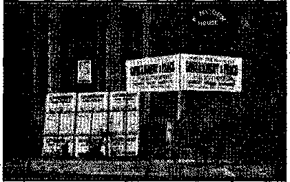
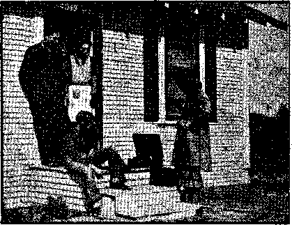
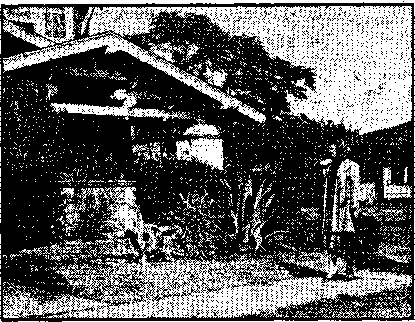
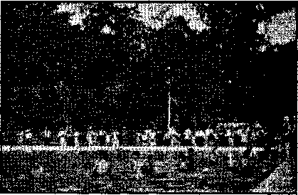

Contents
Appetizers
'Watrhtowrr :in<l Consolation
The New Government
Punishment of East Indian Racketeer
Kapuskasitig, Northern Ontario
Counsel by J. F. Rutherford
Social
Under the Totalitarian Flag
Pupils Move but Won’t Salute Flag
“Onward Christian | ?] Soldiers”
British Conunent
Published every other Wednesday by WATCHTOWER BIBLE AND TRACT SOCIETY, INC.
117 Ada ins St., Brooklyn, N. Y., U. 8. A.
Editor Clayton J. Wood worth
Business Manager Nathan H. Knorr
Five Cents a Copy JI a year in the United States $1.25 to Canada and all other countries
NOTICE TO SUBSCRIBERS
Remittances: For your own safety, remit by postal or express money order. When coin or currencj is lost in the ordinary mails, there is no redress. Remittances from countries other than those named below may be made to the Bnxiklyn office, but only by International postal money order.
Receipt of a now or renewal subscription will be acknowledged only when requested. Notice of Expiration is sent with the journal one month before subscription expires. Please renew promptly to avoid loss of copies. Send change of address direct to us rather than to tho post office. Your request should reach us at least two weeks before tho date of issue with which It Is to take effect. Send your old as well ns the new address. Copies will not lie forwarded by the post office to your new address unless extra postage is provided by you.
Published also in Afrikaans, Bohemian, Danish, Dutch, Finnish, French, Gorman, Greek. Hungarian. Japanese, Norwegian, Polish, Portuguese, Spanish, Swedish, Ukrainian; also special Australian edition in English.
OFFICES FOR OTHER COUNTRIES
England 34 Craven Terrace, Dondon. W. 2
Canada 40 Irwin Avenue. Toronto 5. Ontario
Australia 7 Beresford Road, Strathfleld, N.S.W. South Africa 623 Boston House, Cape Town
Entered as second-class matter at Brooklyn, N. Y-, under the Act of March 3, 1879.
“Orl Right"
The old-iron merchant was trundling his harrow along a narrow English road. Behind him the impatient driver of a motorcar was hooting and tooting impatiently.
The old-iron merchant set his barrow down in the middle of the read, turned round and made a speculative survey of the ear.
“Orl right, guv'nor,” he said, “1’1! call round for that tomorrow. I’m full up now!”—Labor.
Three Cheera
On a card in the front window of an Indianapolis suburban home appeared the notice:
“A piano for sale.”
In the window next door another card appeared with just one word:
"Hurrah!”
Cautious About the Plumbing
Man in barber chair, twice nicked by razor:
“Give me a glass of water, quick.”
Barber: “Whnssa matter; hair in your mouth ?”
Excited Customer: "No, I want to see if my neck leaks!”
The Jaybird
The jaybird that works overtime dropping more nuts than he ever will be able to swallow, through a woodpecker hole in the shingle roof of a deserted barn, has got nothing on the jays who would grab the whole earth to assure themselves six feet of it.
Another Joy-Killer
Politician: “Congratulate me, dear! elected.”
His Wife: “Honestly?”
Politician: “Why bring that up?”
I was
Explaining the Delay
“Since Bill lost all his money he has lost half his friends.”
“What about the other half?”
“They don’t know it yet.”—Kellygram.
When Hubby Wai Too Thoughtful
“If I’m unable to get home this evening,” he said, “I’ll send you a note.”
“Never mind,” his wife replied. “I found it last night in your pocket.”—Labor.
“And in His name shall the nations hope.”—Matthew 12:21, A. R.V.
Volume XXI Brooklyn, N. Y., Wednesday, March 20, 1940 Number 5$B
TESUS foretold this day when the “great multitude” would come from the east and west to sit down by the side of Abraham, Isaac and Jacob, who together pictured The Theocracy. (Matthew 8: 11) To those who are now privileged to witness the increase of this great, swelling army, the fulfillment of the prophecy is thrilling beyond expression. The sight of those coming now to seek salvation under the protection of the Lord’s organization was dramatically exemplified at the recent zone assembly in Long Beach, California, February 9-11. This was not really a convention, but only a joint meeting of Zones 1, 2 and 5 of the state of California. But those of the remnant and of their companions, the “great multitude”, heard of this assembly which was to be addressed by Judge Rutherford, and came from all parts of the west, Canada, and Mexico. The people of Los Angeles and Long Beach, who received an invitation to the assembly by means of wide advertisement and publicity, which was carried on without the aid of any newspaper, also swarmed to the congregation of the Lord’s people.
The climax of the meeting was the public address by Judge Rutherford, on Sunday, at 3 p.m., in the Municipal Auditorium, on the subject “The Theocracy”. An audience of 8,000 people heard this wonderful message from the Lord in breathless attention. A thousand more people were turned away from this beautiful auditorium, picturesquely located on the beaeh of the Pacific ocean. No auditorium has ever been large enough, in Los Angeles county, when Judge Rutherford speaks.
As the remnant decreases in the earth and the “great multitude” sweeps up in numbers, the message of the Lord is more particularly addressed to that company who shall fill the earth with a righteous race. How intently this audience, chiefly composed of the Jonathan class, or “multitude”, heard the speaker describe The Theocracy in the thrilling phrase of the Scriptures! There was realization in their faces that what they heard was lifegiving truth informing them of the purposes of the Almighty to sustain them in this hour of peril and need. “Salvation belongeth unto Jehovah.” (Psalm 3: 8, A.R.7.) It was a marvelous sight to see the remnant and the Jona-dabs gathered together in unity.-Psalm 133: 1.
Judge Rutherford’s speech was not delivered entirely by manuscript, as is compulsory in radio addresses, but it was a heart-to-heart speech delivered with all the fire and emphasis that was possible in appealing to those of reasonable minds that they might seek the Lord’s place of safety. Those joyous people, hearing the Lord’s way of salvation, were a sight never to be forgotten. Clearly it was outlined to them how religion has been the snare which Satan has used to blind the people. Another thrill came when it was pointed out that soon the Hierarchy’s chief potentate would arrange for peace, claim all the credit therefor, and then would sudden destruction come .upon the Hierarchy and their whole gang. “For when they shall say, Peace and safety; then sudden destruction cometh upon them, as travail upon a woman with child; and they shall not escape.” (1 Thessalonians 5: 3) This great message of Jehovah was the soul-satisfying feast for the hungry Lazarus company, many of whom had been held in subjection by the religionists.
Long Beach is fortunate to have some real men among its citizens, who have not forgotten that this country was founded to give freedom to the oppressed. When the manager of the Municipal Auditorium was appealed to to rent the building for the assembly, he answered in this phrase: “Who? Jehovah’s witnesses want to come here for convention? Are you not the people that had trouble with the Coughlinites at Madison Square Garden? You can’t rent this auditorium; we will give it to you free for three days, because you are the kind of people we want in this town.” And despite the Catholic Hierarchy’s usual methods of intimidation, in which they had endless telephone calls relayed to this freedom-loving manager, he stuck by his word and told this bunch of totalitarians to "go jump in the creek”.
There were other real men in Long Beach. It is said that the city has recently had a change in official personnel, a Catholic mayor and governing group having been replaced by some red-blooded Americans. When the priests got their parishioners and other suckers to call up the chief of police and the mayor, asking them to stop Jehovah's witnesses, they got little satisfaction.
The only effect that opposition to the Lord’s message has is merely to advertise it the more. In his address Judge Rutherford called attention to the tactics of the Hierarchy in thus trying to prevent the people from hearing the truth; and so five or six thousand of the public from Long Beach and vicinity heard the exposure of this gang, and their disgust was increased.
Other features of the assembly were service discourses both in Spanish and in English and a model Watchtower study. The Watch tower study was a revelation to many in the amount of ground covered in less than an hour. Brief opening and closing comments were made by the chairman, the salient points of the entire December 15 Watchtower were considered, more than thirty questions asked and answered, thirty-six paragraphs were read; and this was completed with accurate answering of all questions, requiring no additional comment by the chairman, in less than sixty minutes. This accomplishment did not permit of any “windjamming'’. On Sunday morning 226 were immersed, 5,500 books and booklets were placed, besides 1,171 individual copies of Consolation and The Watchtower, during the convention ; attendance at phonograph setups and sound-car recordings was 4,019, besides those present at the meetings. All went home rejoicing at another victory for Jehovah.— Written by one who was present.
FIVE young men, eager to bear to others the vital truths now due to go to the people, stationed themselves on a busy street intersection in Brooklyn, New York, on Saturday, February 24, and offered passers-by the Watchtower and Consolation magazines, at the same time calling out, with great plainness of speech, “Religion is a. snare and a racket” or "Read the truth about religion and see for yourself that it is the world’s biggest racket”, and similar other arresting observations.
They were entirely within their rights in so doing, not only on the basis of the Word of God, but also on the basis of confirmatory decisions by the Supreme Court of the United States, which, in opinions handed down in the Schneider case and the Lovell r. City of Griffin decision, made it clear that no one can be stopped from spreading papers, pamphlets, magazines or other literature, on the streets or elsewhere.
Whether the policeman on the job in this instance knew this or not, he understood that something uncomplimentary was being said about religion. His name was Leahy. So he arrested the young men, all of them, forgetting that the United States is a democracy and that, freedom of speech and of the press is one of the most jealously guarded rights of the American people. He had sworn to uphold these rights and be loyal to them, and defend them with his life—but no matter. Here was something he felt must be stopped. But the end was not yet. He had to appear in court and explain matters.
When the cases were tried he was placed on the stand, and when asked whether he was a Roman Catholic he sort of hated to admit it, but said softly, “Yes.” When asked to state why he had arrested these young men, he said that they had shouted too loud. Would he demonstrate just how loud they had shouted "Religion is a snare and a racket”? He tried, but. something stuck in his throat, and the demonstration was far from convincing.
Then he was asked if it. was not true that “Coughlin’s Social Justice magazine” was regularly distributed at the same location. “Yes,” that, was true. But. he had not arrested any of those who distributed that inflammatory periodical. Was he then a member of “The
Christian Front”? He turned red, but said “No”. The attorneys for the Watchtower distributors then saw to it that the record of the ease included a statement as to the exact reason for opposition to the work of proclaiming the truth of the Kingdom of God. They were aware that the Kingdom publishers were not chiefly concerned about their personal liberation from restraint. They wanted to give a testimony to the praise of Jehovah’s name; for the honor of that name, and not their personal liberty, was the issue. The judge on the bench at first wished to exclude such testimony, not appreciating the situation fully.- But he was a just judge, and, mindful of the fact that these young men had been put to considerable inconvenience, he permitted their attorneys to include a statement of the real reason both for their work and for the opposition of the clergy (who were'back of the policeman), A complete record having been made, the judge dismissed the case, with the statement that the workers of the Watchtower were entirely within their rights, that it was perfectly apparent that their ideals were of the highest, that they were not criminals, and that police officers, instead of interfering, should protect them in their work. The judge stated, “These men will give their life for this work; our country would be better off if there were more men like that, as they are very rare in these days.”
AM a railroad man, and I wonT ^er whether you know that'approx-/ imately 16,000 passenger trains are
operated in the United States, and somewhere in the land a train is either starting or ending a trip every five seconds.
All the ears and locomotives owned by the railroads of the United States, if coupled together, would make a train nearly 20,000 miles in length.
In a year, the railroads carry approximately 500 million passengers, or as many passengers as there are people in all of North America and South America, the United Kingdom, France, Italy, Poland, Spain and Germany combined.
In 1930, the total mileage run by American passenger trains at a mile a minute, or more, was only 1,100 miles a day, while today it exceeds 50,000 miles.
The first streamline train was placed in service in 1934, and today there are 88 high-speed light-weight streamline trains in operation, on 18 railroads, in the United States.
Fifty-six percent of the passenger trains classified as the fastest scheduled runs in the world operate on American railroads.
A railroad passenger can now leave New York on Friday night and arrive on the Pacific Coast the following Monday morning.
One dollar now pays for carrying a railroad passenger 54 miles, compared with 32 miles in 1921.
Pullman and Dining-Car Service
In the course of a year 174 million pieces of linen and 535,000 blankets pass through the Pullman Company’s laundries. Last year the Pullman Company, the world’s greatest housekeeper, purchased 220,528 sheets, 157,780 pillow cases, 20,253 tidies, 455,829 towels, 24,318 headrest covers, 13,692 napkins, and 3,260 tablecloths.
The reason, why the railroads know that Americans like pie is that apple pie is the most popular dessert served on railroad dining cars.
The first railroad dining car was built in 1868, by George M. Pullman, and was named “Delmonieo”, after the famous New York restaurateur.
Railroad dining cars use, each year, about twenty-four million eggs, nine million pounds of potatoes, two million pounds of butter, one and a half million oranges, fifteen thousand barrels of apples, three and a half million quarts of milk and cream, a million loaves of . bread, and about thirty million rolls. ’
Railroad dining ears serve twenty-five million meals a year—which is equivalent to serving every inhabitant of a city of nearly 23,000 population with three meals a day for an entire year.
Railroads buy and use more than 70,000 different commodities, including such things as pfns, needles, strawberries, locomotives, rails and bridges, and railroad purchases are made in 12,000 communities, located in all of -the
States, and in 85 percent of the counties in the nation.
Now Talking About Freight
Do you realize that the railroads last year performed a service equivalent to moving one ton of freight 2,230 miles for every man, woman and child in the United States?
Railroads are the backbone of the nation’s transportation, because only railroads can provide the efficient, low-cost, all-weather mass transportation service required by industry and agriculture.
Last year the railroads loaded 30 million cars of freight and hauled them distances ranging from a few miles to more than 3,000 miles.
About 39,750 five-ton trucks would be required to carry the freight that one railroad hauls into, out of, and through Ashland, Kentucky, on an average day.
To carry the freight moving on one line of railroad out of Pittsburgh, Pennsylvania, on an average day, would require 32,000 five-ton trucks.
Nearly 1,100 five-ton trucks would be required to carry as much coal as a hundred-car freight train.
Ninety percent of the nation’s freight traffic is handled in regularly scheduled freight trains that move on definite schedules, the same as passenger trains.
The average speed of freight trains last year was 61-percent faster than it was in 1920.
Approximately 80 percent of the operating revenues of the railroads is derived from freight traffic.
The railroads now haul ail average ton of freight 98 miles for the price of one dollar, compared with 78 miles in 1921.
Except for Japan, where labor is very cheap, American railroad freight rates, as measured by the average revenue received for hauling a ton of freight one mile, are the lowest in the world.
To buy a three-cent postage stamp takes all -the income the railroads receive for hauling an average ton of freight three miles, because the average revenue is only about one cent a mile.
Railway Express service in the United States was one hundred years old on March 4, 1938. The first “expressman” carried packages between New York and Boston in a carpetbag, and thus the service was inaugurated.
In one three-month period the Railway Express Agency handled more than 200 tons of bees from seven Southern states located east of the Mississippi river.
Rails, Ties, and Tunnels
In 1830 there were only 23 miles of railroad in the United States, while today the total length of all tracks operated in this country would form 138 lines reaching from the Atlantic to the Pacific.
The United States has about 31 percent of the total railway mileage in the world—245,752 out of 789,000 miles of line—although the land area and population of the United States are less than 6 percent of the world’s total.
Railroad tracks in this country are laid on more than one billion crossties—nearly 3,000 grossties being required for each mile of track.
Despite extensive tests over a long period of years, the railroads have failed to find a substitute, which will stand up successfully under heavy main line service, for the chemically treated wooden crosstie.
The T-raii, and the “hook-headed” spike used today by railroads throughout the world to fasten steel rails to crossties, were designed about 1830 by an American.
Railroads in this country began to place steel rail in general use about 1867. The average weight of steel rail in use in the United States is 94 pounds a yard.
The railroads, by using a welding process for building up the worn ends of steel rails, prolong the life of such rails fully one-third.
The point of contact between the track and wheels of the modern railroad locomotive or car is no more than the width of a chalk line.
The first railroad tunnel in the United States was opened in 1833.
Class I railroads pass through 1,539 tunnels which, if placed end to end, would extend a distance of 320 miles.
Supplies and Pag Rolls
About two million tons of steel rail, enough to build a track ten thousand miles long, are normally purchased each year by the railroads of the United States.
The railroads use approximately ninety million tons of coal annually, or 22 percent of the nation’s total coal production. ,
There is a railroad pay roll in every city and nearly every town and village in the United States, and railroad employees receive, in wages, around two billion dollars a year—or about half of every dollar the railroads take in. .
The railroads provide employment to about one million wage earners, who, with their families, comprise a group of around four million men, women and children—which is more than the population of ten cities the size of Indianapolis, Indiana,
It is estimated that for every man directly employed by the railroads, one man is employed by other industries in the production and distribution of the 70,000 different kinds of articles the railroads buy and use.
■When their income will permit it, railroads spend about one billion dollars a year for materials, supplies and fuel, thus stimulating employment and local business throughout the land.
Locomotives and Freight Cars
The building of a standard locomotive provides employment equivalent to the work of 50 men for one year, and requires more than 7,500. parts, from 119 manufacturing plants.
The firebox of one of the largest locomotives in operation is 9 feet wide and 22 feet long —or as large as the average room in a small home.
The building of one freight car requires materials from 31 states and provides employment equal to the work of one man for a year.
Who Own the Bonds?
I wonder whether you know that millions of persons benefit when railroad fixed charges are paid, because these charges are mostly interest on bonded debt—and 56 percent of the outstanding rail road bonds are held by life insurance companies, savings banks, educational and charitable institutions.
The value of railroad property, after allowance for depreciation, according to the Interstate Commerce Commission, is about two billion dollars greater than the total amount of stocks and bonds in the hands of the public.
Reports filed with the Interstate Commerce Commission show that there are approximately 871,000 railroad stockholders. One large railroad is owned by 215,000 individual stockholders, and about one-half of them are women.
Back in 1910, for every $1,000 invested in the railroad plant, the bonded debt was $606. This has been reduced until today it is only $439—or less than 44 cents for each dollar actually invested in the railroads.
MARCH 20, 1940 .
Barge and Truck Competition
To provide and keep up their ■roadways, and to pay taxes, railroads claim they pay out about 32| cents out of every dollar they take ;n Cnly railroads, of all the agencies providing general transportation service, operate on their own roadways, fully pay their own costs, and contribute substantially, in taxes, to the support of. government.
The Federal Barge Line, Government-owned and -operated competitor of the railroads, pays no taxes, and its channels are built and maintained by the public.
The average annual cost of maintaining a mile of railroad, including structures, is $1,792, while the yearly maintenance cost of the New York Barge Canal is $4,749 a mile.
It has cost the taxpayers of the country $145,000 a mile to improve the Mississippi river, exclusive of flood-control work. Users of this waterway enjoy a subsidy at the expense of the taxpayers of more than $10,000 a mile a year. ,
The “taxes” paid by the highway carriers are not like railroad taxes. Railroad taxes are used for the general support of government. What the highway carriers pay is used, for the most part, to build and maintain the public highways they use as a place of business.
The Federal Government has expended 61 billions of dollars to -encourage the development of transportation, of which 2| billions have been for -waterways and about 3| billions for highways.
Passenger Service
Every once in a while you hear something about the railroads’ being on the downward path, but I wonder whether you know what kind of sendee they are now rendering to the traveling public. I live in Green River, Wyoming, through which pass many of the finest and fastest long-distance trains in the world. The other day I borrowed an American Railway Guide and made up my itinerary for my winter vacation, during this January, 1940, just past, as shown herewith.
On this trip of less than two weeks I had an opportunity to see something of many of the most important cities in the United States; visited every state in the Union; saw all of the most majestic rivers; crossed some of the finest bridges ever made; visited the national capital, twelve state capitals and two Canadian capitals; saw some of the finest scenery
7 in the world; slept in a comfortable bed every night; had the best of meals; had access to all the best periodicals (except Consolation),
with barber service, bath, valet service, ladies’ lounge, soda fountain, radio, daily market reports, and other features.
|
January 1940 |
Arrive |
Via |
Mountain Time |
Leave |
Pia |
Miles |
|
Sat. 13 |
Green River, Wyo. Julesburg, Colo. Central Time |
12:30 AM 10:07 AM |
UP UP | |||
|
2:40 PM |
UP |
Odessa, Nebr. Mountain Time |
2:43 PM |
UP |
618 | |
|
Sun. 14 |
3:37 AM 4:00 PM |
UP UP |
Green River, Wyo. Boise, Idaho Pacific Time Pendleton, Oreg. |
4:10 AM 4:10 PM 12: 13 AM |
UP UP UP | |
|
Mon. 15 Tue. 16 Wed. 17 |
7:00 AM |
UP |
Spokane, Wash. " Mountain Time Butte, Mont. Central Time Marmarth, N. Dak. Aberdeen, S. Dak. Minneapolis, Minn. Milwaukee, Wis. |
8: 00 AM 7:15 PM 8:01 AM 3:38 PM 10: 30 PM 7: 05 AM |
CM&StP |
1649.3 |
|
8:55 AM |
CM&S |
Chicago, Ill. ' |
9: 30 AM |
PRR |
1878.4 | |
|
12:12 PM |
PRR |
Fort Wayne, Ind. Montpelier, Ohio Eastern Time |
12: 25 PM 2:24 PM |
Wabash |
148 | |
|
4:15 PM |
Wab. |
Detroit, Mich. Toronto, Ont. |
4:45 PM 10; 25 PM |
CPR |
146.5 | |
|
Thu. 18 |
7: 45 AM |
CPR |
Montreal, Que. |
9:30 AM |
CPR |
569.3 |
|
Fri. 19 |
1:50 PM 7:30 PM 10 :30 PM 6:10 AM |
CPR B&M NYNH |
St. Johnsbury, Vt. Crawford Notch, N.H. Portland, Maine Boston, Mass. Boston, Mass. Providence, R. I. New Haven, Conn. New York, N. Y. Jersey City, N. J. Philadelphia, Pa. Wilmington, Del. Baltimore, Md. |
2:30 PM 4:30 PM 8:40 PM 12-.00 AM 1: 25 AM 4:10 AM 8: 27 AM 10:17 AM 10:47 AM 12:13 PM |
MC B&M NYNH B&O |
151.3 131.3 114.7 229.1 |
|
2:30 PM |
B&O |
Harper’s Ferry, W. Va. |
3:22 PM |
B&O |
279.7 | |
|
Sat. 20 |
4:40 PM |
B&O |
Washington, D. C. Lynchburg, Va. Charlotte, N. C. Spartanburg, S. C. Central Time |
6:45 PM 10: 57 PM 3; 30 AM 5:03 AM |
So.Ry |
55.1 |
|
8:17 AM |
So.Ry |
■ Atlanta, Ga. |
8:50 AM |
A&WP |
637.5_ | |
|
1:05 PM |
A&WP |
Montgomery, Ala. Flomaton, Fla. Gulfport, Miss. |
1:20 PM 3: 55 PM 7: 35 PM |
L&N |
176 | |
|
8 |
9:30 PM |
L&N |
New Orleans, La. |
10; 00 PM |
MoP 318 _ CONSOLATION | |
|
Jannary 1340 |
Der Lust’s remarkable vacation trip |
Miles | ||||
|
Arrive |
Via |
Central Time |
Leave |
Via | ||
|
Sun. 21 |
2:09 PM |
MoP |
Ozark, Ark. |
3:08 PM |
MoP |
612.2 |
|
Mon. 22 |
10:25 PM |
MoP |
Memphis, Tenn. Fulton, Ky. |
11:20 PM 1:45 AM |
IC |
273.2 |
|
7: 20 AM |
IC |
St. Louis, Mo. |
9:00 AM |
CB&Q |
31,6.1 | |
|
5: 21 PM |
CB&Q |
Payne, Iowa |
5:48 PM |
CB&Q |
449 | |
|
Tue, 23 Wed. 24 |
9:15 PM |
CB&Q |
Kansas City Waynoka, Okla. Amarillo, Texas Mountain Time Clovis, N. Mex. Pacific Time Seligman, Ariz. |
11; 00 PM 8:35 AM 1: 45 PM 3:20 PM 7:00 AM |
AT&SF |
150 |
|
Thu. 25 |
6:05 PM |
AT&SF |
San Bernardino, Calif. Las Vegas, Nev. Mountain Time Salt Lake City, Utah Green River, Wyo. |
8:08 PM 1:22 AM 10:29 AM 2:34 PM |
UP |
1716.4 929 |
Total mileage, 11,548.1 miles.
Total time, 12 days, 14 hours, 4 minutes.
Miles per hour for entire time away, 38.2.
Miles per day for entire time away, 916.8.
The best of it is that I had this splendid vacation without the loss of a moment’s time, and without its costing me one cent. I think I explained to you that a friend of mine loaned me the American Railway Guide. The
MARCH 20, 1940
itinerary was honestly made front that; the trip itself ■was an imaginary one. I could not spare either the time or the money to take it. I hope you enjoyed your ride; see the map, —W. A'. N, Der Lust, Wyoming. [?—Ed.]
». Jk Liberty'is liberty, even in Jersey V?'City, and so most real Americans will be pleased and interested in the paragraph in the New York *§**! Post, which, commenting on the Supreme Court decision in the Jersey City cases, said:
From now on anyone may distribute circulars, conduct meetings or make speeches in Jersey City or anywhere else in the country without prior police permission, so long as he conducts himself in an orderly fashion, and the police are not entitled to decide, in advance, that a meeting should be barred because it is “likely” to be disorderly.
♦ West New York is a suburb of Jersey City and has been having a beautiful time working the relief racket. There is a little difficulty just at present, as 10 of the employees, Walter Brierty, Rinaldo Bozzuffi, Ellen Kelly and seven others in the office, and five outside of it, are being tried for forgery, larceny, and conspiracy in 289 indictments. Relief orders were issued to hundreds of persons who do not exist, persons who had left the city and other persons who had not asked for relief. It was all part of the racket to make America Fascist.
Same as Anybody Else
♦ A representative of Mayor Hague, welcoming a convention of the C. I. 0. to Jersey City, represented to the conventioners that Mayor Hague and the city government are just like anybody else. This should go in the “Appetizers” column, but there isn't room. M^yor Hague is just learning the ABC’s of what it means to be an American citizen. After all he has said and done to the C. I. 0. and kindred organizations it must bjirn him up to have to welcome them to his city, even by proxy. '
♦ Blind persons have been given the right of way in traffic in New Jersey. The blind of Jersey City have been presented with white and red canes which give them the right of way at traffic intersections. There are 3,000 blind men and women in the state that will benefit by the new law. '
♦ The Hague gang had a delightful time cleaning out the New Jersey Title and Trust Company, of Jersey City. When they knew it was going to capsize they patriotically withdrew over $2,000,000, so it would be sure to collapse. Then that highly honorable Hague judge, Thomas F. Meaney, resigned his $15,000 a year job so that he could collect the fees which would come in serving as counsel for the State Banking Commission in the eleaning-out process. Fine business, boys!
♦ At Plainfield, Samuel W. Rushmore placed a huge black wooden coffin on the roof of his mansion at 604 Belvidere avenue, placed on the front of the house a large painted sign reading, “Liberty is dead; Heil Hague,” and at the end of his porch put a large ashcan bearing another sign reading, “Hague is the law; dump law books here.” Mr. Rushmore is an old-fashioned American, of whom there are still a few, here and there.
♦ During the generation in which Porfirio Diaz was president of Mexico it was against the law for any voter to vote against him. That was a fine arrangement for Porfirio while it lasted. In Jersey City Frank Hague has been elected mayor six times, and in the last election he received 110,743 votes for and only 6,793 against. He is so popular that one man voted for him 137 times in the last election, and boasted of it. Porfirio Diaz died in exile.
♦ Dorothy Johnson’s parents, living in Philadelphia, decided to spend last summer in Atlantic City, but the cat Celemma would not be allowed to go. That is what the parents thought. Dorothy thought otherwise. She lit out with the eat, hitchhiked to the seashore, slept under the boardwalk, and showed up with three cents unexpended capital still on hand. She was allowed to stay, and to keep her eat. Dorothy is 13.
♦ At Woodbury, Richard Jonesboro was sentenced to eighteen months to two years for stealing two five^cent tarts.
The modesty of Trenton cops is most touching. City ordinances of the New Jersey capital city forbid bingo. The city prosecutor denounced all operators of bingo games, and the police said they would take the operators to court on lottery charges. So far so good. Sergeant Kester Hughes (note. the good old name) and four brave men went to St. Michael’s Roman Catholic Church while a big bingo game was running full blast, but, you know, the “Reverend Father” Rakvica, who was running the lottery, would not let them in, because they had no tickets, and those five cops had been so well brought up by their mothers that they went right away without doing one more thing. Now, isn’t it nice to have such modest cops?
♦ That was just too bad that those boys at Upsala College stole some; examination papers on religion and other subjects, copied them and sold them to fellow students for $5 apiece. One of the purchasers was a skillful buyer: he paid $2 down and the balance after satisfying himself that the copy was a true copy. Whoever swiped the original papers let himself in between 11: 00 p.m. and 1: 00 a.m. through a window which had been opened from the inside during the day. The boys made good use of their papers. One who had been getting very low standings in his class work received an examination standing of 97. The Prof, thought that was too much of a good thing, and an investigation followed which brought the foregoing facts to light. Four boys were expelled, and a fifth suspended.
♦ At Camden the “Reverend” Walter Dwo-recki, Baptist clergyman, paid a former boarder for murdering his own daughter, so that he could collect $15,600 insurance on her life. The sum agreed upon was $100, but the clergyman paid only 50c on the account. While his attractive daughter was being choked to death with the bare hands of the former boarder the “Reverend” was conducting “evangelistic” services to “keep people out of hell”. When he saw the body of his daughter he put on a big display of grief. The “Reverend” has been unlucky in several arson and counterfeit money enterprises in which he has been engaged, and was easily caught.'
♦ How do you like your babies ? Steam-cooked I If so, apply to Perth Amboy General Hospital, where four were nicely done an hour after they had been inspected by the head nurse, Daisy Alaguinness, and found all right. That was at 1:30 a.m. The radiator valve in the nursery had been taped because it would not hold together otherwise. Just as soon as Coroner Flynn had announced that the accident was unavoidable, the tape was removed, and with it the evidence of criminal negligence. A fireman stated to a reporter that the nurses sometimes removed valves to put up the temperature. What kind of hospital is it that would have radiator valves that a nurse could remove without a wrench, or in which a quadruple roasting such as this could occur? What with cooking men at Holmesburg and now steaming babies at Perth Amboy, it appears that everything is coming along nicely for the party anticipated just prior to Armageddon.
Nincompoops at Trenton
♦ It would be a disgrace to the worthy peanut to refer to the state senate of New Jersey as composed of peanut politicians. Imagine the utter worthlessness of men, seven Democrats and seven Republicans, that would rush to appoint as a judge of the Court of Errors and Appeals a man that less than three years previous had been admitted to the bar. When the New Jersey State Bar Association sought to investigate the qualifications of Frank Hague, Jr., to this $9,000 job the nincompoops at Trenton hurried and put him in the office anyway. Hague is a national menace.
♦ Robert Bierbaum, Camden grocer, was about to fail because his customers owed him $2,700 which they would not pay. He posted a sign in his window that he was about to close up shop because the following persons owed him the amounts stated. On the first day he took in over $500, and stayed in business.
♦ What is going to happen ? At Paterson three former officials of the local relief administration were put in jail for conspiracy to misappropriate $15,060 of the city’s relief funds. If New Jersey would jail all its crooked officials there would not be enough honest ones left to do the chores.
♦ Two of our Indian pioneers, Tony and Dan, in the course of their work in Poona of proclaiming the good news of the advent of the Theocratic Government, called at the home of an Indian religionist, Pastor Savant, and were invited by him to play the phonograph speeches. This was done, and he at once manifested the goat-like disposition that Jesus said would identify His enemies. (Matthew 25:31-46) Instead of showing the gratitude due to those who seek to do good, this man resorted to violence as his father did before him.-John 8:44.
Dan had been a newspaper correspondent for India’s leading newspaper until the truth reached him and he entered into its service, and, thinking this news item would interest the local press, he sent them a brief account of what had happened. But the Press of India is as prostitute as that in other parts of 'the world, and these rejected the item submitted, preferring the favor of the local religious crowd to keeping faith with their readers.
We have not the ability to mass hundreds of publishers at a given town, as have you; but we have that same consuming love for Jehovah as have His people elsewhere, and we gladly responded when the Bombay branch office invited another pioneer and me to take the sound-ear to Poona. We are an insignificant body compared with the massed millions of India’s population, but we have no fear for the Devil’s hordes; our only fear being of Him whom we love supremely—Jehovah.
We took with us a thousand handbills which read as follows:
Religion versus Christianity
INDIAN PASTOR ASSAULTS CHRISTIAN WORKERS -Two of Jehovah’s witnesses,- working with the Watch Tower Bible & Tract Society, are in Poona preaching the gospel of God’s Kingdom by means of recorded speeches and printed literature. While working in Rasta Peth on October lt> they happened to go to Pastor Savant’s house (St. John Mission) and with his permission reproduced some Bible lectures by Judge Rutherford. As these lectures exposed the hypocrisy of the Christian reli-
12
gionists and showed a difference between religion and Christianity, the pastor became enraged, with the result that one of these witnesses was assaulted and abused by him and, as though that was not enough, this said witness was obstructed by force from leaving the premises for some time and further assaulted. A complaint has been filed at the Quarter Gate Police Station.
This sort of thing compares very well with the intolerance and religious persecution which Jesus and His disciples encountered. No doubt Pastor Savant was not afraid of these two witnesses who visited him, but he plainly was afraid of the truth which they brought to the attention of the people who listened to those lectures. Jesus warned His followers that they would be hated of all nations for His name’s sake, and especially by the same crowd of religionists who persecuted Him to death.
The same speeches which were reproduced to the people of St. John’s Mission are available for you to hear quite free of charge. You are invited to ask for them to be reproduced in your own home, or anywhere else. If you cannot ask one of Jehovah’s witnesses personally, write for further information and literature to the Society’s office:—
Watch Tower Bible & Tract Society, 17 Bastion Road, Bombay 1.
These were distributed among all of the English-speaking public of Poona during the courseofour door-to-door work, and given out to those who listened to the lectures from the sound-car.
At our very first pitch a man who invites those who can be so duped to call him by the title “Father” in direct violation of the commandment of Jesus to the contrary (Matthew 23: 9), a minister in the Church of England, went off for the police. But while “Father” was able to induce a posse of police to come and listen to the lectures, he could not induce them to break the law by arresting us for exercising our lawful rights. So “Father” helped us to the extent of increasing our audience to the amount of six constables, for which we thank him. They listened to the lectures and, we hope, enjoyed them. We gave them handbills, and the “father” went away, no doubt much disgruntled and dissatisfied with a world that no longer jumps to obey when a back-tojront collar and flowing maternity gown commands. I found my sei f thinking that the police of America might learn a lesson from their less civilized (?) brothers in this land.
Notice was read out in all of the churches that Jehovah’s witnesses were in town, and that nobody should hear us, take our litera
cy NSOLATl on
“Government and Peace” at Hamburg, Arkansas; 8 newcomers, not counting children
ture or entertain us—a bit of free advertising for which we were truly grateful. Even the clergy may sometimes do good, howsoever unwittingly.
We learned that Pastor Savant had a crowd of cronies to whom he dispensed occasional material blessings in the form of drink and food, and these were to attack us if we went anywhere near to his locality. Nothing deterred, and trusting in the protection of Jehovah, we went; and no harm came to us. “The mighty men of Babylon have forborn to fight, they have remained in their holds; their might hath failed; they became as women.” (Jeremiah 51:30) Instead of the promised thrashing, we got a large and attentive audience, among whom, perhaps, would be the pastor who had dared to touch one of the Lord’s anointed, gnawing his tongue and kicking himself for a fool as the hypocrisy of the clergy was shown up by the lectures and his own particular wicked act told over the microphone. At most places 'where the lectures were given some people of good will were located.
Now Poona has a Model Study class started, and many are showing an interest in Christianity as opposed to religion. Some of these are from Pastor Savant’s own flock, and I had the privilege to get in some “’locust” work at MARCH 20, 1»4O a meeting arranged by them with the sole object of finding out why all of the clergy were warning them to have nothing to do with us. This was their very first Question; I took in a very long breath and answered. It was midnight when we at last went home to our food.
The last that we heard of Pastor Savant was that he was consulting his lawyer for fear that we were going to take legal steps against him. He need have no sueh fear—we are not seeking our own vengeance; for Jehovah will settle all accounts at Armageddon. It is truly a strange work in which we are engaged, and with all my heart I thank Jehovah for the unspeakable privilege of being called to engage in it. ,
The work in India goes steadily forward. From various parts of our field I hear of advances being made. In fact, just now it seems that the toil of many a difficult year is beginning to bear fruit; for from various places I hear of opposition being aroused and of some coming into the fold of the Lord’s '‘other sheep” as a result. Only those who actually work in this country know of the difficulties that confront us at every turn; and only we know the great joy that comes from serving faithfully in spite of these difficulties, and our cup of joy flows over when we behold the
. 13
great multitude of those of good will rubbing their eyes in wonderment as they walk out from the darkness into God’s marvelous light. —C, S. Goodman, Pioneer.
♦ I feel so thrilled and grateful to Jehovah that I would like you also to share this joy He has given me during the last few days.
Last Wednesday morning there was a company drive and I was working with them as I usually do. In the course of the morning I observed a lady leaving her house three or four doors from where I was and my first thought was to let her pass without witnessing to her, but second thoughts prompted me to approach her quickly and before she had got many steps from her front gate. Judge my pleasure when after hearing the nature and purpose of my work she said “Come in” and returned indoors. Presently she stated that she was a Catholic. It was a Catholic district and a few minutes earlier a lady had, with a demonstration of indignation, come out of her house after me and tore up and threw away a Catholic-Fascist Menace leaflet. However, the lady I was interviewing had a very different mind and listened attentively to what I had to say. She said that she had not been satisfied' for some time, and later divulged that at one time she had attempted to leave, but the “Father” ■ had created a great fuss and so she ultimately allowed him to persuade her to stay. I asked whether she was a “practicing” Catholic, whereupon she told me that she was unmarried, was a lady of independence living in her own house and owning property; that she arose at 6; 15 a.m. and went across to the “Church” and opened it
Kingdom House, Manchester, England
14
Miss San Antonio, Texas, proclaims the Good News to a group of four, at the doorstep
every morning and assisted the priest daily in saying the Latin responses; she also had sole charge and care of all the priestly vestments, altar cloths, candlesticks, etc. In short, she was doing all the duties of a sacristan, free. I asked her permission to call in a company publisher — a sister — and quickly arranged for the sister to call for Miss Bennett to take her to a Salvation stud.v for the following Tuesday. I placed with her, for the time being, Riches. Enemies, Salvation, and Uncovered, and asked whether she had a Bible, and she said “No”. So I offered to lend her ■my Catholic Bible. I returned with it the same evening (also some records). She welcomed me and said she was free and desired me to go in. So I played several selected records, and when Judge Rutherford said on the “Enemies” record that for 1500 years the Roman Catholic Church had worked much injury to the people she spontaneously responded “That’s true”. I should have said, that immediately upon entering this time she picked up the Uncovered booklet, turned baek, and showed me she had nearly finished reading it. I played “Instruction”, and she gave me a year’s subscription for The Watchtower. While I was there “Father” Rooney rang her up on the telephone and she, laughing, let me hear the conversation. He asked her to go across to the church; and she said, “No, I've got a visitor.” She showed me the counterfoils of her cheque book.; but, as she requested my confidence, I eannot repeat how many hundreds of pounds she had paid out to him.
CONSOLATION
Miss San Antonio, Texas, thus carries her phonograph from one doorstep setup to the next
She has been a Catholic for thirty years, and I mentioned it was strange that no attempt had been made to induce her to take the veil; and she replied that they had had her in a convent and she wore the black habit of a nun under temporary vows for a short period. When she left, the mother superior spent three hours trying to indue$ her to stay.
She writes: ■
Dear Mr, Meaden,
Very many thanks for your kind letter and the loan of the book.
I have just finished reading it and am amazed at the accuracy of the many details. I know more of these things than the average Catholic and am in entire sympathy and agreement with the writer,
I note what you say re Tuesday and will bring the Bible and book (Salvation) mentioned.
I am hoping to find sufficient courage to take the first step in breaking away from the Catholic Church early next week. Unfortunately for me, it is not just a matter of working out of it at one step. I have various Church funds in hand which must be handed over to Father Rooney in person, besides other Church belongings. I have felt for many years that there was something very radically wrong with the Catholic organization. I myself could write a book on jts injustices and cruelties.
I have been in responsible positions in the Church and have thereby acquired firsthand knowledge.
All good wishes until Tuesday, (Miss) G. Bexnett,
She will attend Salvation study tomorrow, and I pray God will give her vision and courage to go the whole length, declare herself for Him and replace her former work with the Lord’s “'strange work” of witness.—Harry Meaden, Pioneer.
♦ We have had a very interesting experience in Kapuskasing. The chief of police accosted us three times demanding that we obtain a license to sell books, We showed him our testimony card and explained that we were placing literature on a contribution basis and did not need a license. He commanded us to secure a written order to this effect from the1 town clerk. We put him off the first time and studied our Order of Trial for our course of action. It occurred to us that it might be the decent thing to go to the town clerk, give him a witness and explain our work, but did not go, because we were afraid this would constitute a compromise. In this case the chief seemed to be trying to intimidate us into leaving town; so we continued working, and after interrupting us three times he picked us up and took us before the magistrate at the town hall. The chief accused us of selling without a license and said he had a witness ready to swear that we “sold him” a book; that there were complaints coming in every day about our ‘bothering the people and refusing to leave their homes without their buying our books’; and what was more, they wanted to hear this “offensive record” we were using in this work. We waited until the chief got done spluttering, and then presented our testimony card and explained that as our organization had a charter to work anywhere in Ontario we did not consider it necessary to ask permission to do this work in Kapuskasing. The magistrate asked us where we had worked before, and whether we had been asked to secure permission to work in the other towns. We said, No, no one had even suggested such a thing; most church organizations solicit contributions for
Baptism of Jehovah’s witnesses at Houston, Texas
their work, so why discriminate ? He then called up the party the chief mentioned as his witness and asked him if lie remembered getting a book from one of Jehovah’s witnesses and did he buy this book or did he contribute to the work. Just imagine our relief when the man assured the magistrate that it was a donation. At this point the chief again mentioned the record; so we asked permission to play it. Both men listened attentively right through “Snare and Backet” and at the conclusion the magistrate assured me it was a “very interesting talk”. Naturally this was a little hard on our Catholic friend, the cop, and to let him down a little the magistrate gave us quite a talk on the importance of the town officials’ knowing what was going on in the town. He ended up with the admonition to hurry up and get finished and get out of town because the telephone was kept busy with complaints about us. He stood up then, rubbing his hands as if to be through with us, and said, “Well, Chief, I won’t do any more about this,” and walked out. We asked the chief if everything was O.K., and he said “Absolutely”. Needless to say there was a couple of thankful pioneers that moved out of that town hall quickly.— Mrs. E. Holland, Pioneer.
The Light of the Dying Leper
♦ To be sure, it is not to one’s personal credit that he serves the great Creator' with all his powers. Who does less is very foolish, unworthy of life, and is sure to die. However, the account of faithful service of those who do serve under great handicap thrills the heart of all who are interested in the vindication of the name of Jehovah.
In the leper colony of Pirapitingui, Sao Paulo, Brazil, is an active company of Jehovah’s witnesses. With testimony card, literature and phonograph they visit again and again the other patients of the colony, to the number of 2,500 to 3,000; visit the hospitals, where they play the records and read to the blind patients; and conduct Bible studies with the books and Watchtower every night in the week. Not content to witness only to those in their colony, they applied to the State Leprosy Board for permission for those who were physically able to visit another colony at Santo Angelo. After some months the request was granted, and five of them spent three happy days witnessing in Santo-Angelo, finding interest and placing considerable literature. One interested person whom they found there was
shortly afterwards transferred to Pirapitingui, much to their delight, and is now joining with them in the work. How the Lord is finding the Jonadabs and a.dding them to His flock, even in a leper colony, is shown in the following story' told by one of Jehovah’s witnesses in Pirapitingui;
“A little old woman, widow of one of Jehovah’s witnesses who had died about six months previous, was dying in the isolation hospital of the leper colony. She was almost illiterate, but had continued to receive, read and pass on the best she could the sweet message of life contained in the publications of the Watcii-towkr Society. ’Please don’t use any candles for me. I don’t need them. Jehovah is my light,’ she said. Her request was honored; she was buried without candles (contrary to the usual custom), and the young man who heard her request asked for her Bible and literature, read them, and has now taken his position on Jehovah’s side, where there is light.”
Some one unknown to the company (they suppose it to be one of the doctors) is writing regularly in their colony paper items of truth which he is taking from the latest publications of thejSociety.—N. A. Yuille, Brazil.
♦ From the interior of Cuba comes a sweet letter from one of Jehovah’s witnesses, Spanish, but educated in the rudiments of English. Writing to Judge Rutherford he said, in part;
Please excuse bad writing, because I never went to school. May Jehovah preserve you and all who walk, uprightly. My gratitude to the Almighty is more than I can explain, bat all true hearts must see the right, and that this work is the work of the Almighty God. I think I could tell about the Kingdom by word of mouth, but the phonograph is better. It speaks plainly and with striking harmony. I am glad for it. When 1 stand or sit behind it my mouth has great ease. I have so many baek-ealls that if I could divide myself in three it would not be enough. We trust in God.—Joseph Clarke.
♦ A lengthy report regarding conscientious objectors before the special tribunal called to consider their cases in London mentions that when Jehovah’s witnesses appear and convince the bench of their convictions (i.e., that they really believe and practice the things for which Jehovah’s witnesses stand) they are usually registered for agricultural or forestry work, (lb be continued)
consolation
(CVT OW about that time, Herod the king
1.\| stretched forth his hands, to vex certain of the church. And lie killed James the brother of John with the sword. And because he saw it pleased the Jews, he proceeded further to take Peter also. (Then were the days of unleavened bread.) And when he had apprehended him, he put him in prison, and delivered him to four quaternions of soldiers, to keep him; intending after Easter to bring him forth to the people.” (Acts 12:1-4) If “Easter” were a Christian feast, then King Herod the Jewish proselyte would not have shown respect for it. On this text the Catholic Douay Version Bible reads: “And when he [Herod] had apprehended him, he cast him into prison, delivering him to four files of soldiers to be kept, intending, after the Pasch [(Am. Rev. Ver.) Passover], to bring him forth to the people.” In the face of all this the religionists of “Christendom” celebrate Easter, which is anti-Christian, demonist ic.
Note The Catholic Encyclopedia, Volume 5, which says: “Easter.—The English term, according to the Venerable Bede . . . relates to Eostre, a Teutonic goddess of the rising light of day and spring, which deity, however, is otherwise unknown, even in the Edda . . . ; Anglo-Saxon, easter, . . . Easter is the principal feast of the ecclesiastical year. Leo I . . . calls it the greatest feast (festum festorum), and says that Christmas is celebrated only in preparation for Easter. It is the centre of the greater part of the ecclesiastical year. . . . the Apostolic Fathers do not mention it ... ” Thus it is shown that Easter honors a woman or a demon rather than Christ Jesus, the Son of God, whose resurrection religion claims to celebrate oh Easter Sunday, the day of painted Easter eggs and bunnies.
Mark how religion has from the very beginning pushed the resurrection of Christ Jesus to the side. It was God’s purpose that Jesus should be both the ransomer and the deliv-ever of believing men; and' He could not be the deliverer if He remained dead. It was therefore necessary for Jesus to be resurrected. The question may be asked: If Jesus was put to death as a man, and the value of His sacrifice as a man must be presented in heaven to God, “whom no man hath seen, nor can see,” how could a man appear in heaven and present that ransom price? The answer is: He could not, for the reason that no man has access to the spiritual realm. (1 Timothy^ 6:16; 1 Corinthians 15:50) A human creature is confined to earth. Jesus died as a man, but His Father Jehovah God raised Him out of death a spirit creature. About this 1 Peter 3:18, Revised Version, plainly says: “Because Christ also suffered for sins once, the righteous for the unrighteous, that he might bring us to God; being' put to death in the flesh, but made alive in the spirit.”
Resurrection of the dead means an awakening out of death and a standing up again to perfect life. The man Jesus was dead and must forever remain dead as a man, to the end that His right to live as a human creature might furnish the redemptive price.
The resurrection of Jesus was up to that time the greatest demonstration of God’s power ever made manifest to man. Jesus’ resurrection was and is a part of God’s great arrangement for man’s deliverance. This being true, it is to be expected that Satan the enemy would do all within his power to prevent the resurrection of Jesus, and failing in that he would do everything possible to blind the people to the truth thereof. It is reasonable to conclude that Satan knew the words of the prophecies. Jesus’ resurrection was anticipated. For the first day after Jesus’ death the Devil and his invisible angels, demons, and probably some of his visible angels, would be celebrating. They would be felicitating one another over the death of Jesus. At the first sober moment, they would recall His words concerning His resurrection. The record is: “Now the next day, that followed the day of the preparation, the chief priests and Pharisees came together unto Pilate, saying, Sir, we remember that that deceiver said, while he was yet alive, After three days I will rise again. Command therefore that the sepulchre be made sure until the third day, lest his disciples come by night, and steal him away, and say Unto the people, He is risen from the dead; so the last error shall be worse than the first. Pilate said unto them; Ye have a watch: go your way, make it as sure as ye can: So they went, and made the sepulchre sure, sealing the stone, and setting a watch?’—Matthew 27: 62-66.
Satan the enemy knew of Jesus’ words to the disciples, and Satan put that thought into the minds of the chief priests and Pharisees. Satan would reason that he would prevent the resurrection of Jesus, if possible, and, failing in this, he would so confuse the minds of the people that they would not believe that Jesus had been raised from the dead. Satan failed in the first, but he has fairly well succeeded in confusing the truth of the resurrection of Jesus. God has given such abundant proof, however, as to the fact of the resurrection of Jesus that all may know, and all will know when their minds are opened to a proper understanding.
Having received this suggestion from Satan, and having been authorized by Pilate the governor to provide a guard, the clergy hired a guard and put them at the tomb to watch. This guard kept close watch; but in due time there came to the tomb the angel of Jehovah God and rolled back the stone from the door and opened the sepulcher to reveal that it was empty. The guards, greatly frightened by what they saw and heard, hurried to the city to tell the religious clergy that Jesus had been resurrected from the dead,—Matthew 28:1-12.
At once the unholy triumvirate of commercial, political and religious elements called a council, in which they expressed all the wisdom they had, trying to solve their difficulty. After much deliberation the financial part of the trio raised a large sum of money and passed it into the hands of the clergy, and they in turn bribed the guardsmen to lie by instructing them: “Say ye, His disciples came by night, and stole him away while we slept. And if this come to the governor’s ears, we will persuade him, and secure you. So they took the money, and did as they were taught: and this saying is commonly reported among the Jews until this day..”—Matthew 28:13-15.
So well did they work this scheme that for over nineteen centuries a major portion of the peoples of earth have not believed in the resurrection of Jesus. The Devil was able to create such a doubt that many have not known whether the Lord Jesus was resurrected or His disciples carried away the body. But, notwithstanding this effort of the enemy, Jehovah saw to it that an abundance of proof was provided, sufficient to satisfy any searcher for truth then or thereafter that He had raised up His beloved Son out of death. The Devil’s later effort was to confuse Jesus’ resurrection with the demon Easter, “a goddess of the Saxons, or, rather, of the East, Esters, in honor of whom sacrifices [were] annually offered about the Passover time of the year (spring).” (McClintock & Strong’s Cyclopedia) “The things which the Gentiles sacrifice, they sacrifice to demons, and not to God: and I would not that ye should have communion with demons.” — 1 Corinthians 10:20, American Revised Version.
When God raised Jesus out of death, the great Master did not appear to the religious clergy that they might see Him and be witnesses. Had Jesus done so they would not have told the truth about it. It is to be observed that the Lord never uses wicked ones for His official witnesses. Religionists may talk in His name, but they do so without authority. The Lord chose as witnesses to the resurrection those who had been faithful and those who loved Him, and who resisted the demons.
- One day a father went out with a w for a walk. They passed be
side a big farm by which was set a board with the words, “For Sale.” . “Dad,” asked the child, “why is
that farm for sale?”
“Certainly the owner does not need it,” answered the father.
“Dad,” asked the child further, “to whom does he want to sell it?”
“To a man who would need it, my child.”
The child went into a meditation. A few minutes later they approached to a colony of falling-down barracks, which stood so close to each other that it was hard to pass through them.
“Here it is so tight,” said the child, “why do not these people move over to that large farm ?”
“That farm does not belong to them, and it is going to be sold,” replied the father.
“Then why do they not buy it?’ inquired the child.
' “Because they have no money.”
“But why haven’t they got it?”
Father kept silent for a while. “Don’t ask so much!” said the weary father.
The child remained silent for a long time. Coming back home by a different way, they approached a palace, before which was hung a large sign board, “To Rent.”
The child looked (at it, but said nothing. A few steps from the sign, against the wall, slept a very old woman dressed in ■ ragged clothing.
“Why does this woman sleep on the street, and not at home?” now asked the child.
“She has no home!” answered the father.
“Then why does she not go to this large house on the opposite side, as it is vacant?”
“This house is not hers,” said the astonished father, “nor is she allowed to enter a stranger’s house!”
“Why not ?” asked the child, with obstinacy.
“Who would not allow her ?”
“The law.”
“The law! And who made the law?”
Again the father kept silent for a while. “You will wear me out with your questions,” said he.
They went farther. At the crossing of two streets stood a crowd of people looking at a horse lying there.
“Get up,” cried the coachman; “get up, Jack!” But the horse merely lifted his head just a little. ■
“Get up!” cried, the people; “get up!” But he did not move.
Then the people began to think as to what to do to remove him from the road.
“Dad,” said the child, “if all these people would take hold of the horse and help to remove him, the road would be clear; isn’t it true?”
Father looked at the large, questioning eyes and smiled.—Translated from the Polish edition of Consolation, No. 47. ■
♦ Humanity is slowly learning how to live, just about when it is too late. A boy born in t '1901 could expect to live 48| years, but a boy born in 1939 could expect to live 60| years. The girls are longer-lived. A girl born in 1901 could expect to live 51 years; but if born in 1939, could expect to live 65 years.
♦ Irving Brant, editor of the St. Louis Star, went abroad to study housing conditions and returned with the information that in Britain a man on $15 a week earnings can get a house for $15 a month rent that he could not get in New York city for $50 a month. One naturally wonders why, and puts the answer up to the Big Business crowd that have the money and are not content with modest returns. He also said that if the United States were to be put up alongside Denmark, Sweden or Finland this entire country would look-like one vast slum. He is reported to have said:
You should see the houses built for working people in Scandinavia! They are on a scale, in proportion to population, that makes the public housing program, in the United States look about as big as a telephone booth.
That all sounds pessimistic, hut is probably the truth. On the other side of the ledger is the fact that last year, in the United States, there were 429,000 new dwelling units constructed in other than farm areas, representing a cost of $1,550,000,000. That runs at about $3,600 a unit and indicates a rental of about $30 a month, as things go in America.
♦ The really powerful assistance that the despots are receiving from this side of the Atlantic comes from those Americans—and their name is legion—who never have known what Americanism is. Into this category one may safely dump the entire membership of the Ku Klux Klan, as well as the German-American Bund, and with these a good many, although not all, members of the D. A. ft., of the American Legion and of the National Education Association. And there are plenty of others. — Gerald W. Johnson, in Baltimore Evening Sun.
Checking Up on the Beggars
♦ You know about those beggars that come into the world without a stitch to their back and demand and get the best of everything. Well, here are some of the ways now in vogue to keep them from getting1 lost: footprints, palmprints (on the same sheet with mother’s fingerprints), a string of beads bearing letters which spell the child’s or parent’s name, a metal tag on the mother’s wrist, with a duplicate tag on the baby’s wrist, and finally the suntanning of the baby’s name through perforated tape on the baby’s back.
H Middle Ages is one out of about 150 school textbooks published by Laidlaw Brothers that is bound to do a lot of damage £ to any teacher compelled to teach it or to any child compelled to study it. It is written in such a way as to be entirely submissive and subservient to the Roman Catholic Church, and to make it appear that that evil institution, instead of being earth’s greatest curse, is its greatest blessing. It is probably the work of Jesuits.'
One reason for thinking that the b<iok must have been prepared under Jesuit influences is that under the heading “The Reformation” the section devoted to Henry the Eighth and the Church of England is compressed into eight lines but it takes four pages to tell about the Jesuits, though nothing is said about the fact that this order was suppressed by Pope Clement XIV, and the Jesuits have on six occasions been expelled from France, five times expelled by Britain, five times by Spain, three times by The Netherlands and by Russia, twice each by Belgium, Portugal, and Paraguay, once each by Japan, Hungary, Denmark, China, India, Brazil, Mexico, Switzerland, Austria, Italy, and Germany, and, on thirty-nine other occasions, from various cities, provinces, colleges, islands and states, including the Papal States themselves (March 29, 1848).
It should not be overlooked that Pope Clement XIV, who suppressed the order, was himself educated by the Jesuits. The Encyclopaedia Britannica explains:
Whether from principle or policy he proceeded with great circumspection in the suppression of the Jesuits, the decree to this effect not being framed until November 1772, and not signed until July in the following year. This memorable measure, which takes rank in history as the most, remarkable, perhaps the only really substantial, concession ever made by a Pope to the spirit of his age, has covered Clement’s memory with obloquy in his own communion. There can not he any reasonable doubt of the integrity of his conduct, and the only question is whether he acted from a conviction of the pernicious character of the Society of Jesus, or merely from a sense of expediency. In either case his action was abundantly justified, and to allege that though beneficial to the world it was detrimental to the church, is merely to insist that the interests of the Papacy are not the interests of mankind. IIis work was hardly accomplished ere Clement, whose natural constitution was exceedingly vigorous, fell into a languishing sickness, generally and plausibly attributed to poison, [Regular policy of the gang,—Ed.]
Pictures Tell the Story
The book is beautifully gotten up. Its appearance would be a credit to any publisher, and with the orange and dark-blue lines at the top and bottom of each page, and the numerous pictures scattered through it, and the maps, the normal child would be bound to be interested and delighted. That makes the book all the more dangerous to lovers of liberty and truth.
There are pictures and maps on 120 of the 406 pages that go to make up the book; and as pictures leave a more lasting impression than words, on the child mind and on the mind of adults too, they may be considered somewhat as to their objective. That objective is to convince the child that “Our Developing Civilization” [the subtitle of the book] is developing along the lines of religion, and that the more religion is put into it, the better; and that the best of all religions is the Roman Catholic religion.
The maps are not so badly infected. The pope’s triple crown and keys appear on one; Charlemagne praying in front of a huge cross, just before he goes out to murder those that will not submit to being baptized, is on another; a third one is a muezzin lifting his blood-stained hands' to Allah; but there are nine other good maps that could not be criticized. Proportion of religious maps, 25 percent.
There are 19 full-page illustrations or pages of pictures. One of these is of the Rheims cathedral; another show's a churchman, a high ecclesiastic, standing back of King John and compelling him to sign the Magna Charta; a third is a monk acting as physician to an ailing child; a fourth is a reproduction of the work of a monk, showing the virgin Mary introducing the child Jesus to the doctors of the law' in the temple (despite the fact that she did not know where he was at the time); a priest is shown on the very first page of illustrations in the book; Jesus blessing children is shown on one page; another shows a muezzin calling Mohammedans to prayer; in another page scene a priest is standing by to bless a vassal when he kneels before his lord; one full page is devoted to a beautiful imaginary illustration of a monastery; there is a full-page picture of Joan of Are, sainted because she was demonized—heard spirit voices. That makes ten out of the 19 fullpage pictures either with a religious motif or with religious features. That is 52.6 percent of tire most important pictures in the book.
Will that have the effect of impressing religion on the child mind as being the most important thing in life? It is intended to accomplish that very thing, and is not at all badly planned to do so,
Misleading
the Children
Says the retiring invisible empire to its successor
To mislead a child by causing it to reverence superstition and error and the teachings of men instead of the Word of the true and living God is to do one of the most reprehensible things a human creature can do.
There are 90 less-than-full-page illustrations in the book, most of them excellent and instructive; some of them not so. There is a large-sized picture of Loyola, founder of the Jesuits, in bed, reading the lives of the saints; a picture of a Jesuit priest in China; a picture of the pope putting the crown on the head of Charlemagne; a picture of the pope crowning another king; a priest teaching school; a monk, with a cross conspicuously delineated; a monk inviting travelers into a monastery; a monk feeding the birds, to show his interest in all living creatures; a priest ringing a mission bell; Charlemagne approving plans for a great cathedral; a picture of Christ before Pilate; one of Constantine accepting Christianity; one of King Clovis and his wife, each holding a big crucifix; one of Mohammed thinking about religion; one of Mohammedans fighting for religion; one of a squire kneeling in prayer in a stained-glass - window church; one of a churchman reading the first summons to parliament; one of Joan of Arc tending her father's sheep;
one of Henry the Fourth waiting out in the cold in the snow for three days to get an audience with the pope; one of Peter the Hermit organizing a “crusade” — the forcing of the religion of the cross on the heathen ; one of the crusaders en route to the Holy Land; one of the crusade of the children, being led to their doom by religion ; a picture of the madonna; a picture of Luther nailing up his theses on the door of the Wittenburg church; a picture of the pilgrims going to church ; and something that came mighty near being overlooked altogether -—a very delicate sidestepping of the whole
Inquisition horror. That makes 26 religious pictures out of 90, and comes to 28.9 percent.
So, then, out of a total of 120 pictures and maps there arc 39 that have religion mixed up with them; that is 32.5 percent of the total, and it would be fair to assume that the motive in the preparation of the book was at least 32.5 percent religious, away from God, toward men, and not in the interest of the children temporally or etern'ally.
Now About the Reading Matter
The reading matter is at least as religious as the pictures. There are 14 pages about “The Beginning of a New Religion”, supposedly Christianity. Midway is a picture of one of the early popes or priests, standing in front of a huge cross; he is preaching in the Cata-
SEVEN LIES IN TWENW-THREE LINES A Kingdom publisher living' in France sent the dispatch from a French newspaper here reproduced. The censor cut out twentv-five li"Ki .ViIirMSi UNESOSETISECREIt
“ LES CHEVALIERS DE LA TOUR K GARDE ” AVAITETECREEEDANS LE NORD DE LA FRANCE Fndfa Hr it* itrtuftTf ti *T«-tou tm ilpM htmeiMiit r«ii. fJtttX till k dtfaitlKM
4* ptai dxolu
UU«, 2t set. Mdp, Farraj
Une Information jttdlclairs wmt d’tirs ouvrrte contrt d<i ttrtngar* dt 11 Tijton de une qui aviiM# conitituJ uno eocietG eecrtte dont It but <ts.1t de dimon^Mr la* jh> pult'lotti lran(iiH at po1onsji« de eettp rtjrJon, Cette iccieti evult prja pour titre < Im CbeviJtere de is Tour d» Garda
remain, there are seven '.lies, after the best practice of the Roman Hierarchy racket. The translation reads:
"A secret society, ’The Knights of the Watchtower1, has been ■formed in northern France. Founded by foreigner B, and placed under, a false religious appearance, It taught the most absolute defeatism. Lille 27 October, (message in Petit Parisien.) A Judicial inquiry has Just been opened against certain for-, elgners In the region' of Lens who had formed asecret society whose (Object waste demoralize the Frenohand Polish populations. This society had taken as title ’The Knights of the Watchtower.' (The 25 lines cut outbythe censor then follow.] Other arrests will follow. Mons. Lerlche, police magistrate at Bethune, has been appointed to settle this affair.
D'ttntK ttruKUoae ruhreat. Nt. LerlBhe. luxe dlustructlen d Sfthune, ft tu «ct*nd pour eutvre Ottti ftffeJrt.
combs; he has a cross on his vestments. The next to last paragraph states that Peter was “the first bishop of the church at Rome’*, which is Untrue, and the last paragraph is about the pope and devoted to the theme that “in time the term ‘Pope’ came to inean the Boman bishop only”. Clever work on the part of the writers and against the children; is it not?
There are 20 pages about monks and monasteries. These contain 34 pages about “Saint” Benedict, who thus occupies in the book a little more than the space given to Jesus of Nazareth. This will help the child assess the relative value of the two. The concluding picture in this section says, “The monks helped their fellow men in many ways, and they were kind to all living creatures.” Bully monks.
There are 21 pages about the Crusades. In the moralizing which starts this section off Almighty God is charged with the raids of the barbarians who pillaged “Christian" countries, All the Crusaders had to have a cross on forehead or breast. The crimes committed by the Crusaders constitute one of the worst records of all time. The book The Middle Ages merely vaguely hints at this. One form of praise is the condemnation of an evil thing with a faint condemnation, smiling while you do it. It takes an artist to do that, but it is done right along.
There are 22 pages about Tiie Reformation, and when the student has finished this chapter, winding up, as it does, with 44 pages of fulsome praise of the Roman Catholic “Church” and particularly the Jesuits, the natural result in his mind is that he thinks that on the whole this period is one of real glory to the church, and that while a few individuals at times did a little something off-color, yet the institution as a whole was and is A-l.
About the Inquisition
Oh yes! About the Inquisition. Did you ever hear of that worst of blots on the record of humanity, wherein some 50,000,000 human " X>jL creatures suffered at the hands of the worst fiends the earth ever knew? You are in luck. You got your education before The Middle Ages was published. It is not even mentioned in the six-page index of this oh-so-valuable work on history for children.
But don’t think the child is to be left without any impression on this subject. He is left with an impression, but it is a false one. On page 199 is a picture of a man walking blindfolded over a floor covered with red-hot plowshares. Under the picture it says, “If he burned himself on the hot plowshares, he was declared guilty.” A bishop and five priests witness the performance, but the scene is sandwiched into a chapter on “Trial by Jury”. There is nothing said about the Inquisition; but the child sees the picture and the context and gathers the impression that it had something to do with trial by jury, and does not have any conception of the fierceness, the devilishness, the beastliness, the inhumanity back of the whole infernal thing.
In one of the nonreligious chapters, on pages 244-251 inclusive, the writer seemed to fear he had not said enough about the pope; so he got down to business and mentioned that gentleman 37 times in the eight pages. He went to bat for him 11 times on one page.
In Illinois, where this textbook for children is used in the publie schools, one of Jehovah’s witnesses resigned as a teacher rather than be a party to poisoning the minds of the children by teaching from The Middle Ages, “Our Developing Civilization,” by McClure, Seheck, Wright; Laidlaw Brothers. Publishers, Chicago, New York, San Francisco, Dallas, Atlanta.
Slop from Hollywood
♦ The Associated Press carried as news a dispatch from Hollywood that “Bryan Foy, who used to be one of the Seven Little Foys, is looking for movie stories which have Catholic priests in featured roles”. The interesting thing about this propaganda is not that the priests are heroed in everything that comes out of Hollywood nowadays, to the disgust of millions of Americans who have no use for their racket, but that The Associated Press would carry such a patent advertisement of the Hierarchy as “news”.
Cates Wants to Know
♦ Referring to Roosevelt’s appointment of his own personal ambassador to the pope the “Reverend” J. Elmer Cates, of Calvary Methodist church, the Bronx, wants to know whom Myron C. Taylor represents and whom the president represents; Of course, nobody should be sarcastic, but Mr. Cates leans that way when he says, according to the New Y'ork Herald Tribune:
And who is the president representing? Presumably the American people, part of whom are 100,000,000 Protestants and 5,000,000 Jews. Has there been any demand on the part of this overwhelming majority of our people to have the pope represent them ? .
Taylor Wants More Religion
♦ Religion, the guidance of mankind by human tradition and human great ones instead of by the Word of God and its truly great Author, makes a great hit with the humans who take themselves seriously. Thus Myron C. Taylor, the pro-Fascist ambassador of Roosevelt to the pope, after his appointment, said:
I am doubly pleased that the opportunity comes through the field of religion, that great cornerstone on which civilization and man’s dearest hopes for the future have and must rest if human destiny is to aehievq its ultimate triumph over the forces of evil.
We Put It Over—Didn’t We?
♦ Eugene Paeelli, at present holding down the job of pope of Rome, feels that hd and Franklin D. put it over on ■ the American people in pretty good shape in the appointment of Myron C. Taylor, of the Steel Trust, as Roosevelt’s private ambassador to the Vatican. In his letter to Roosevelt (which it took him only fifteen days to write, after he knew all about the appointment) he follows his usual custom of smearing ink on paper with hundreds of words where six words would do as well. It isn’t convenient to tell Eugene too much about how to ran his business, but if he wants to get to first base in these days he can’t spend too much time chatting with the umpire after he has swatted the ball. The best thing he can do is to gather up his skirts and. beat it for the bag like Paavo Nurmi or Jesse Owens when they are in a hurry.
His papers (published in London) admit that it took years for Mundelein and others to crowd Roosevelt into doing this, and he came to it only when he realized he must. It comes with rather bad grace, then, for Eugene himself to say that America’s “Chief Magistrate of the great North American federation, under the spell of the holy night of Christmas should have taken such a prominent
Thia, from the Santa Barbara, California, News-Press betrays an unkind disposition on the part of the paper and an attempt to belittle generosity and benevolence. The Jews were obligated to the law, to submit to it, to turn the cheek to it, but in this case (Herman could legally and Scripturally have asked for jus tics, the cost of filing a oomplaint, employing an attorney, serving the necessary papers, time lost from witnessing, damages to property, and incidental losses.
Paul once reproved a judge upon the bench for causing him to be smitten unjustly and Jesus Christ demanded to know of 'an officer why the man illegally struck him. See Acts 23:3 and John 13:23,
M. J. Donnelly, of 1335 Bath street, didn't take kindly to the Christian message William J; Gier man carried to him one day In June and as a result he Is a defendant today in a justice court Lawsuit.
Cierman only asks $4.40 dam,' ages and it cost him a fee of $5 to filo his complaint, besides at least another dollar to serve the papers, to say nothing of the expease of engaging an attorney, Weston £, Learned.
Gierrpan, in his complaint, fib cd yesterday in Justice Wagner's court,, say a he was engaged in a peaceful Christian piLsslon last June 2B. Going from house to * house spreading the gospel, he stopped at home,
"When he attempted to present his appeal to Donnelly the lab ter, according to the complaint, became angry and In hie rage seined two portable bookcases Gierman carried and threw them to the ground. Also, Gierman ah leges, Donnelly threw a record' ing machine, with two records, on the ground and cracked the records.
Gierman didn't turn the other Cheek. He hired a lawyer.
4 J%- AMERICA /ys, 1 .-■ ""‘J
C&M
SEATTLE, THURSDAY, FEBRUARY £2, 1940
TWENTY-TWO PAGES
Pupils Move—but Won’t Salute Flag
Bay View Split on Issue; Youngsters Now Attend School at Sumas
By CurtU Allan
UeciL'.iso tiiey rer-jn«j (□ bh.[-i1Cc iht Slj.ra tot! Btr'pts in school, two children, til (ho llltlfl city of Bay View |u Skagit County have been tkilnrl to laftthijc commumtv. tnr tic co [heir home. '
This win rcYESled ynslcnfay Io the wake of a controversy that bit runt Bay View rot rr.cn Lb & and drawn the Aflcolion o( atatr im| gaunt? cffticlilLcitn to one ot tba itrar.ireht rtene hi yftars.
Anu toe ■ newer ot Dorothy and Eagers W a do atilt Is;
“Wt pty hijmlflc Dflly tg God,* prefer exile to salute
"Bunch"—as Eugene le called by JlLh. Kindly—uml Dorothy up living among ilrjinRere now to attend Ruelas pubiic ac:bcol whore they am not required Lo ealuta ton Man ✓They refer nxilo from bomn ami parents to betrayal ot ttclr faith by iiijtlnj; th he flag.
Ju Al a Pule over < year ago, New Year I'jSs. foiirtEPb-yfriiY-olii Doro-l±y an'l- her brother, twe.vp, clirDbe^ ITjr hill to the llvniwm Bay View srT.uot house as ubil>I. ;
Wiien their schoDhrniilen ro?e to Hire 1lie wnr-xiy flag r-xorciSEE, Jlunch and Doi nt by itayed In 1krir sfal?. This v,aa not ehn rirat time Ihla kdil IvifrrH'r.cd. Elite the Ipcb'i Itohaot boan] had met and derlrlr:; tbit under school fawe, dagsaluting was rompulaory.
Two 3TICK TO BELIEF1
Principal Paul iliinun asked lb<i two children tn ealuie [Jm flag. I
■"■ft egalriit our bell ere/’ they rsplled Merrily. '
’'Go homo Lntlt you are rta/y , •to aaluta the flaa,” |ho principal 6/dored them. j
: Seven otter Bay View children Ibcl:>nRin$ tn the same society—Je-Ibovflb's WitncjiRes—tad di-darcd it »•» agalntt their bftltof.x, toe, ThrTHtr-neid eipiiliron, provirlc-a tin. der the urhol cmlr. for refusal tn nlrrtlge- allnsiancc, bud overruled th«'ii' otic:Linns.
-'ii.. irh" ar.d Dot<ii hy dirr.l:ni1 I He hii- many titnss. hut tiiry rftfUReil 1<i ralute lbs fljtg. The piincinal vriiA nr|iiAliy aj, inJl'fCcril they could no', intiii-n to setonL tin-Lilr. they had agreed tn dn in, Around tbo stove Ji: Jnrjjpnscn'? ctcie wli :io vllleRE-rs waited for i hu. daily iiia'l Jo bo 121 aL’il>jtrf• they dlacjsried the '"hJLIJ.m.1 k>n." 11 n Suridayi a!:i?i nliurrb Sot oul. liny
■ Vlowitce lingsied on tie ftejn lo I err him go views on ''shculr. 'Ihrv' sali-ti) ttio Mag or siioi- dn't 1lity."
HIRE SPECIAL TEACHER
In the tdmntime the -inriuRs, Mr. aniS Mrv George Wade, hired a [{aid I Linn l::fih school glf.d'.l n ■ n- H. fflrJ V,hn bi'lnriged to ll:cir f.illK- -tn hcaid hi'.d j-Ou:ti with thrOl AUd ti-ach Bunch and IJomthy their KLbJecl'j. '
. . . . And Lte ’■'tlog sai'.il in^1' r-rab-i?m just eicjmered, got talked at fi .i I, JI'mil ill rd !?rw!i,lt>ckrl ou bblli. Eld-^ Un1,l rciiiml wni) oul, |
When thr ihiklrvn Wein not al-, 'lowed to reenter aehool when it ?
tool< up Iiga:;i lns.t fall • Lir. "‘.S thi'.v I jipieed tn kjIuIc ' Old . Glory-'—I V.'aflp wrcce <?. VV- Ha roil tun, Hate atm' ncy general.
Ttip atrnrjicy general sent this f.tlbC'Ol bo^rd ii, lelier fn.iln: iL.tg Jda I nt cry rets Lieu nt the sltLiaicn:
'"I im l«!h to believe your (iChool) board would Intentionally Viqlale the toretituSan -q[
STUDYING IN "EXILE"—Dorothy B)id Eugene Wsde catch up on homework after being out of school more than a year. They refused to adlutc the flag.
the United Steles ard of the state of Washington. E am also aware of the fact teat a hoard of school bl reOto ri is not expected to construe the law, etpecipl-ly In a ease like th'* * he re trnb statute ccnMicti with anp'.hnr,11 Hamilton wrote,
। ]’n his cipinioii the lillorney Ben-erAl riled * em* tried by the UpR ed States district noun of Pinney Lvanis which decided:
"Individuals have <h« right net only to entertain Jhy rsligLous behef, but alio ip. de pr refrain ;
fra it- doing any act, an iffensC'en-tic.iE grounds, which doe* not fircjutf'co The safety, maraia, property, or pi retinal rights of Lhe people, a-d tra Individual .concerned must be ths Judge of tns validity of bls own religious
"Ult beloved Hag, the emblem nt tniigicus liberty, sjrparciitly has been lined an un iJi&LiumenL to Im; pnan a relifloua tesL ae a naridLilcii for receivluEr the benetits ot public educKlloo, And this has bntJi doh# wit hod'. CO m Pl'll i El K Tic tensity uf puhlin safety or welfare," the court decided.
Ths statute reQuIrlug a pupil to salute the flag 1a invalid and un-cntin111ntlertal, Altornry Qsseril Hpndltoa denier nd,
CITIZENS HOLD MEETING
Haymond D, lioyt, Bay View Schotil board preiideut, and lino s lawyer, was out sn niiro of tba at-:ornsy general's Dplnicu. So thf rebec! board took two actions;
Rluhard Writs, 'county pros.ll-rut Ing attorney, was ssked tar an cplnion of the attorney general's c pinion. '
A town meeting was called to ae«j :r the cltljcna of Usy View could iron nut the codtroyrrsy, once and for all, by themselves, ' T-ung belnra the meeting began (he nrbnalhcmse was filled. .Hoard Presldsnt Ilciyt acted as cbnLciESiD. Firuirlente who had -nrrt benn Id the :chuci] house iInca thry had iReen pupils wrni fhere.
"I fought ovirstac urdsr the Mag. I sum don't believe a CDUc'e ef stub born kl^a ought 'to be allpvud !a Insult 'her' now?’ (me mlrl rose to oly.
A woman, roR« to the childrsti’s
"Wclf, fFag salute .or nd flag nlf'jte, these children ought to be I« sch&nl,1’ she said.
MISS THEIR PARENTS
Back- and forth 1!io iljueusslnn went, jrciwlr.g ir.ora heated, ending with tho lesua still as far from set' tlcnmr.t as ever.
"UiuLnh" and Dorothy are back ib school—E:i uiiother county.
”lt'i' Foneiome without Mom and Dad, but I never figured I’d ha eq giad to he going to aehool again,” “Bunch" *a|d, speaking for both bls aiattr and himself.
Score one for the 7J-f for this good front-page write-up.
place in the vanguard of those who would promote peace”, etc., etc. Paeelli knows that this appointment has not the slightest ret'erenee to a desire for peace. It was a swap between two politicians; nothing more, nothing less.
Pacelli;s words, words and more words about Roosevelt's “far-seeing statesmanship” and that “only he” could know what to do in this pinch because he “unites with high political power a clear understanding of the voice of humanity” are all pure buncombe. His words that “only men of such moral stature will be able to create the peace” are pure flattery, and as for the “providential help”-, if Iki had w'anted to tell the truth, or wanted Franklin to tell it, he could have left that out. Why have his papers publish the truth in London that this deal has been in contemplation for years, and then let the cat out of the bag that the only reason something was doing, away down at the end of Franklin’s seventh year, was that he wanted to be re-elected, fie wasn’t “under the spell of the holy night of Christmas” when he appointed Taylor. He was up against the need of Catholic votes if he wanted to get back in a third time. That’s all there was to it.
(To be continued')
♦ A standing military force, with an overgrown executive, will not Jong be safe companions for liberty. The means of defense against foreign danger have been always the instruments of tyranny at home. Among the Romans it was a standing maxim to excite war whenever a revolt was apprehended.
Throughout all Eu-
up under the pretext of defending have enslaved the people. It is perhaps questionable whether the best concerted system of absolute power in Europe could maintain itself in a situation where no alarms of external danger could tame the people to the domestic yoke.-James Madison, fourth president of the United States.
Patrioteers present arms
♦ Uncle Sam is motorizing. Troops will no longer march to battle. They will ride. The trucks will carry ten soldiers each and walk right up a 65-pereent grade. The guns will follow on heavier trucks, but all able to make 45 miles an hour. A traveling garage goes along, to make necessary repairs. The ambulances carry ten sitting cases or four stretcher cases. In case of necessity these armies go “cross lots” in any weather.
♦ 10,000,000 known dead soldiers.
6,000,000 reported missing, about half of them dead.
20,000,000 or more wounded. .
28,000,000 civilians dead from disease, famine, pestilence.
9,000,000 war orphans.
5,000,000 war widows.
10,000,000 rendered homeless (refugees).
130,128 American soldiers were killed in battle, or died from other causes. Millionaires: 1914, 7,500. 1918, 25,000.
Net profits of 18 leading U. S. Corporations: 1912-14, $74,650,000, 1916-18, $337,000,000. Net profits, E. I. duPont de Nemours & Co,:
1914-18........................$225,500,000.
—From a handbill distributed in Seattle.
Smedley Butler ♦ You may not love Major-General Smedley D. Butler, but you cannot help but understand him. Thus, in a speech at Boston, he is reported to hhve said:
France and Great Britain are shadow-boxing on the western front, probably waiting for the United States to get in the war and fight their battles. The British and French armies are like a thin woman with a bustle—all parading and no form. ■
♦ The number of men sacrificed to the Devil in submarines is a mere nothing as compared with the millions offered to Moloch in the World War; nevertheless 750 brave men have been drowned like rats in a trap in submarines in the last 35 years, and this number does not include those who died in the World War.
♦ Franco the Butcher, betrayer of the Spanish Republic, and “blessed” by the pope for so doing, presented a new mosque to the Mohammedans of Ceuta, Morocco, in recognition of the fact that the pope could not have won this war over his own subjects without their aid.
MARCH 20, 1040
25
Every reader of Watchtoweb lit-
5 e nature knows that Jehovah’s Kingdom publishers are the most aggressive anti-Fascist group' on earth. There is nothing for which they entertain greater hatred or contempt, because this beastly combination of the Raman Hierarchy and utter godlessness is the t;abomina-tion that maketh desolate”. Hence it is amusing and not a little exasperating that in many cities, as in Hamilton, Ontario, the police headquarters was flooded with telephone calls that Fascists were in the city when Jehovah’s witnesses there were distributing Fascism or Freedom. The police had intelligence enough to see at once that the books are anti-Fascist and that there is nothing, in them that could hurt anybody but the Devil and those that have the spirit of the Devil.
♦ Sailing along at thirty miles an hour over the surface of Rainy lake, in a truck, the ice broke and down went the truck and two occupants thirty feet to the bottom of the lake. They managed to get out, swam to the top in the dark, felt around and finally found the hole through which they had plunged. One got out. dragged the other out, and then they both walked two miles to a place where they got an automobile ride four miles into town. Tough as pine knots, neither one felt any ill effects the next day.
♦ Two wrecks in every year snowbirds appear in the isle of Orleans, off the Quebec coast. Just before the visit of the king and queen 30 men were sent to the island, where they snared 2,750 of these rare creatures. When the Quebec government feasted their royal majesties, each guest at the banquet w’as given a patty made up of 8 breasts of these birds. It seems as if the birds could have been spared.
♦ It seems quite well established that in the far Canadian north there is a moose that is amphibious and able to live and feed on the lake bottoms in the dead of winter when heavy . ice completely covers the surface.
♦ On Caughnawaga Indian reservation, outside Montreal, in December, there were persons in the Indian hospital ■who were not Indians and had no right there; the Quebec Liquor Commission delivered liquor to the reservation when it had no legal right to do so ; the water on the reservation is polluted and unfit to drink; the tribal fires are smokeless because there is not enough Vvood on the reservation to heat the bouses; many of the Vidians were starving.—Condensed from the Toronto Globe and Mail.
♦ Brigadier Wallace Bunton, of the London corps of the Salvation Army, was the speaker at a military rally at Guelph, Canada, a few weeks after Chamberlain agreed to throw Czechoslovakia to the wolves. Bunton showed his great love for his fellow men, and his desire for their salvation, by saying that if any of them are not satisfied to live under the Union Jack,
then the only thing to do is to load them all into .a boat with a false bottom and take them into the middle of the ocean and then it will be all over.
♦ For breaking the padlocks on his own home a British subject was given two years in prison in Quebec. Under the Padlock Law the attorney- general of Quebec may padlock any house in which he suspects Communism is being taught. And the worst of it is that all efforts to insist that Communism be defined have been in vain, and the persons who thrust this infamous law on decent people have admitted that they do not want it defined—so that they can close any home they see fit, and keep hands off the purely Communistic monasteries.
♦ Glacier crashes have occasionally been seen by man, and are among the greatest spectacles ever seen by human eyes. No one saw it, but there was a magnificent glacier fall in Banff National Park, Alberta. For two weeks prior to the fall the glacier on Mount Hector had been seen hanging over Molar creek. After its fall it- was found to have moved two miles and to have covered the valley -with ice 200 feet thick.
The niagnetic pole of the earth is located near the line of 70 degrees north latitude and 97 degrees west longitude, at a point 1,433 miles due north of Winnipeg and 250 miles north of the Arctie Circle. Eskimos of lands far to the south are now coming into these northern zones to live, encouraged by better food supplies and also by more favorable climatic conditions than formerly prevailed. They even tried to make themselves at home on Devon island, 400 miles farther north, but found that even a little too much for Eskimos. After two years of it they were glad to be moved (by the Canadian government) 300 miles farther south.
Papal Crests on Telegraph Blanks ♦ Understanding that papal crests appear on Canadian National and Canadian Pacific telegram sheets, Consolation would appreciate having samples sent in to this office, and, it need hardly be added, would appreciate enthusiastic co-operation by all readers in every part of the world, in sending in clippings, articles or photographs on any subject whatever likely to be of general interest to all. Do not expect someone else to do what you should do yourself.
Another Trace of Viking Penetration ♦ Traces of the viking penetration of North America five hundred years before Christopher Columbus allegedly “planted the cross of Christ” on American shores have been found in Minnesota, in the Hudson Bay region, and in various places in Nova Scotia and New England, A grave was accidentally opened by a powder blast at Beardmorc, Ontario, recently, and in it were found various Norse weapons such' as were in common use a thousand years ago.
♦ If you wish to see gannets and other seabirds, follow the 10,000 tourists that went last year to Perce Rock and Bonaventure island off the Gaspe coast, 400 miles east of Quebec, at the mouth of the St. Lawrence river. The sides of Perce Rock rise 300 feet and are pierced by a natural passageway 80 feet in span, through which small boats pass. Gasp6 can be reached either by rail or by water. The birds can be seen and photographed without disturbing them. '
♦ The periodical Labor draws attention to the fact that in 1913 Ontario recorded 64,516 births, of whom 7,596 died, but last year out of a total of 65,375 births only 3,244 died. It thinks, and rightly, that this is “something worth boasting about” in an era when there is such a mania for rearmament and war and when there is so little regard for the lives of human creatures as to make the destruction1 of food needed by millions a common thing. Saving lives at one end and destroying them wantonly at the other isn’t getting humanity very Tar.
♦ While in many countries food is being burned or otherwise destroyed, a quarter of the population of Newfoundland live in abject poverty, receiving a dole of 6c a day for adults and 3c for children. In the coldest weather they have nothing but rags to cover them. The Kingdom of God is the only hope for a world so miserably ruled.
♦ The burning of convents in Canada continues. Two firetraps, one at St, Barthelemi and one at Stoneham, both in the province of Quebec, disappeared in flames. Within twenty hours thereafter the Beauport, Quebec, insane asylum, operated by the grey nuns, also went up.
Canadians Good Neighbors
♦ Americans and Canadians are such good neighbors that in the year 1938 there were 17,568,467 pedestrians and passengers in vehicles crossing the Ontario-United States boundary via the facilities provided by international bridge, tunnel and ferry companies.
♦ The radio performs a great service in Canada by sending thousands of brief personal messages to prospectors and fur traders hundreds of miles away from any postal service. A check-up shows that most of these messages are received O.K.
♦ If you are interested in your fellow men you will be interested and surprised and pained to know that in Canada there was a crop of almost 100,000,000 pounds of tobacco harvested in 1938,

British Comment
By J. Uemery {London)
• Two weeks after a series of unusually heavy .snowstorms, and with (for Britain) very low temperatures, the people were allowed to know what had happened. The snow and the eold were general, but beyond that mails were very late, and the long-distance trains'were either not running or were a very long time in their trips; there was no general knowledge of the hardships to which the midlands and the northern parts were put. Food and coal supplies got to very low proportions in many places, and the country generally has had a hard time. It is now said that Britain has had the most severe weather and the lowest temperatures for well-nigh 100 years. In this land, with its short distances between towns, and its excellent transport facilities, there is no provision made for these visitations which occur once or twice in a century; so, apart from the personal troubles, the great manufacturing concerns have been held up or greatly hindered.
Britain’s experience has been common to all the higher latitudes of the northern hemisphere, though surely shorter than that of many other lands. Except in Finland, where Russia has shown its haste to occupy the country, the cold weather has held up the war activities on land. In France and Germany, where the armies of the Allies and the Germans face each other, the battle has not yet been joined. These armies seem about as stuck as were the armies of Israel and the Philistines in the war which God settled through young David. Whether this unusual eold in these northern latitudes is just a. happening or is one of the forces which the Creator is using to affect the issues, wo may not know. We may know, however, that the events in the earth and the quarrels among the nations at this time are inside the purpose of God; for the day of His judgments is come. Men and nations may make their moves, but the end comes on. The work of Jehovah’s witnesses telling the peoples of the earth'of the purpose of God to bring the nations before Him, according to the prophecies He caused to be written -for this very time, is now known throughout the earth. The war, whether on Britain’s part in the declaration of seeking freedom for the peoples from the. aggression which has brought such death-dealing destruction on the continent of Europe, or on Germany’s part in resisting the Allies, is hastening that gathering of the peoples to face the facts of His judgments. In the meantime, while the great armies are in a condition of stalemate, the war in the air and under the sea, and the difficulties of seaborne transport, are hitting the nations in their vitals.
• The pin seems to have come out of the Government’s scheme for the evacuation of children from the cities and towns which are considered most liable to bombing. To the Birmingham education committee figures were reported which show the breakdown of the scheme in that city. Of the number of children taken out to areas, considered safe, only about 9,000 have remained; which, says the report, means that 93 percent of elementary school children are in the city and are without the necessary teachers. This condition in Birmingham is by no means unique; rather it is typical. As the Government has not moved to bring the teachers back, not yet submitting to the parental forces against them, the majority of the teachers are yet in the country small towns and villages. In one instance a report showed that there were 16 teachers for 43 children. It was a great scheme for the protection of the young, but it has come unstuck, probably in great measure because the feared bombs have not come.
• High over the dome of the Central Criminal Courts in London is a figure of a woman, blindfold, holding the scales of justice in equal balance. Impartial justice is represented, telling that in the courts below the persons brought to trial, perhaps with the death penalty a consequence of an adverse sentence, no other consideration than that of a true judgment without fear or favor to accuser or accused will be given. No doubt it is true that in the British courts, whether ih the criminal or in civil actions, there is always the intention to proceed to and give a true judgment. In the civil cases, where case law so frequently determines a judgment, there is often a question of its rightness; but the reputation of the judges for hopesty is not brought into question. The same applies to the criminal courts and its judgments. There is now no possibility of a rectirrenee of the “bloody assizes” of Judge Jeffreys marked by the judge’s relentless cruelty and his manifested eagerness to pass the death sentence on those accused of participating in the Monmouth rebellion.
But it is not every person who, having the responsibility of conducting a judicial inquiry, is guided by the example of the higher courts. The smaller the man, the more likely he will want to expand himself. In the tribunal to try the eases of the conscientious objectors in the Newcastle district, the chairman of the court, the judge (Richardson) whose observations about the young men known as Jehovah’s witnesses called forth the rebuking remarks from the bishop of Birmingham, has continued to manifest his unbelief in their sincerity, and has, as one; thinks, shown his partiality towards his own prejudices. Differing from every other court the Newcastle court has not allowed one of Jehovah’s witnesses to remain on the register of conscientious objectors to war and to work for the advance of the war. The judge of the Newcastle court had an objection to the statement in the “testimony” card which all J ehovall’s witnesses use in their work of preaching the gospel from house to house. The card says the bearer is an ordained minister of Jehovah God, to preach the gospel of God’s kingdom under Christ, and is an accredited agent of the Society in whose work he has a part. The clergy in all the religious sections claim the right of ordination to the ministry of the gospel of the Kingdom, and this is the word which designates entrance into the closest form of ‘trades unionism’ on the face of the earth. The word is, of course, Scriptural and is properly used by the Society in its commission to have the Gospel preached in all the world. No human authority may reserve to itself the right to limit the freedom to proclaim the good news of the Kingdom, nor is there any truth whatever in the claim of the churches to give file status of “minister” to any person, nor is there any value in their laying on of hands designating a person is ordained. But this close corporation is necessary to the system of the human government in the churches, and is strongly supported by men such as this chairman of the Newcastle tribunal, spoken of in the Scriptures as the principal of the flock of the false shepherds.—Jeremiah 25:34, 35.
• The Church of England is like the Papal church in its priestly characteristics, but its form of government (episcopalian) prevents it from becoming a totalitarian organization as Rome is. Its bistiops are as princes in their diocese and cannot easily be deposed from their little kingdom even though they say and do things which are quite out of agreement with the prayer hook (which is as a Bible authority in the church), or even express disagreement with the 39 Articles which state the beliefs and the practices of the church. The bishop rules the churches in his diocese, and the parsons in that diocese" may not exchange service with those of another except by the consent of the bishops. The bishop is a prince in his kingdom. Much the same kind of rule is enjoyed by the deans of the various cathedrals. The cathedral is placed under the control of the dean, and clergy other than those who are appointed to conduct its services may not be allowed there to serve except by the consent of the dean; and this applies to bishops and to the two archbishops also.
The “red dean” is the dean of Canterbury. He is very “red”, not only in that he is a believer in communism as a theory, for he is an ardent admirer of the Soviet and its government, and even of Stalin. The dean will share the platform at Communists’ meetings, advocating that form of government. Since Soviet Russia has made the attack on Finland, shocking the world by this cruel aggression with its death-dealing terrors, the dean has published a book extolling the Soviet. He contrasts the conditions of England wdth those of free Russia to the advantage of the nationals of Russia, and of Stalin he says, “Stalin is no oriental despot. His new Constitution shows it. IT is readiness to relinquish power shows it. His refusal to add to the power he already possesses shows it.” No doubt the dean had written his laudation before the outrage on Finland began; but he has caused it to be published since then. The dean must make the dignitaries of the church of England see red ; but he holds on to his job, at £2,000 a year, and there is no power to put him out of it because of his political beliefs or acts. The archbishop of Canterbury probably feels a bit red when he has to arrange with the “red” dean about the services, and in that the eathe-dral which gives them both their title shelters so radically minded a dignitary of the church. No doubt the pope and his cabinet take a little pleasure out of this rather awkward situation of the archbishop, a situation which would be impossible under Papacy's totalitarian rule.
Blind and Dull of Hearing
• One of the “very reverend” of the English Roman Catholic fathers, preaching in their cathedral in Westminster, said, “The whole of Christianity stands or falls by the [religionists’] claim that Christ is part of the trinity.” He concluded his remarks by quoting the last words of the twentieth chapter of the gospel of John: “These things are written that ye might believe that. Jesus is the Christ, the Son of God; and that, believing, ye might have life through his name.” This “very reverend father” also told his audience that Jesus was crucified because He said He was God. In saying that he lines up with the Pharisees and the leaders of religion who caused Jesus to be killed. Jesus spoke of himself as the son of God, and, in dispute with the Jew's, said, “Say ye of him, whom the Father hath sanctified, and sent into the w’orld, Thou blasphemest; because I said, I am the Son of God,” and He told them what He meant by saying He and His Father were one. He was doing the works of His Father, as they had to admit, “that ye may know, and believe, that the Father is in me, and I in him.” (See John 10: 29-30.) That Jesus had and has a unique relationship with God, the Creator, and because of His fidelity to His Father’s commission is made Lord of all, has a place at the FathePs right hand, is the revelation of God concerning Him, and further disclosed both by His own words to His diseiplcs when with them, and afterwards by the instruction they received from Him through the holy spirit, Words could not be plainer in their intent than those given in the Scriptures. The Jews were ready to kill Jesus because He said He was the son of God, and today the leaders of religion arc ready'to destroy the witnesses of Jehovah, faithful disciples of Jesus, because they say openly that the dogma of the trinity, which makes Jesus God the son, is wholly contrary to the Scriptures and must be accounted as a blasphemy against the name of the Living God, the Father of Jesus. The fact is that the dogmas of the churches were moulded into shape to build up a religious system; have been promulgated for that purpose; have been and are retained to maintain these organizations. They were never intended as helps to the understanding of the Scriptures and of the purposes of God therein revealed. The perversions of the sacred writings by the Jews prevented them from receiving the truth when Jesus came, and brought about the destruction of Jerusalem and the scattering of the nation. History in this is being repeated: the same conditions are present, but on a worldwide scale, and the same results are in sight.
• In that same center of Roman Catholicism, the Westminster cathedral, the same reverend, who is Superior of the Roman Catholic missionary society, likened the Nazi and Soviet aggression on Poland to a serpent, and added, “No armies could crush the serpent, Only the mother of God could.” The pope claims to be the vicegerent of Christ, and ought to be able to crush any serpent. The “father” seems to have talked somewhat at random, for he went on to say, “We Catholics have such immense power, if vve could only use it. Power with God. We are God’s own people, and in a sense, we make God act. . . . And if you and I have power with God, what about Our Lady, the mother of God—whose heel is upon the serpent’s head?” To stamp on this serpent “belongs to the mother of God. And she will, if we ask with the faith that removes mountains”. The reverend went on to put some words in the mouth of Jesus, as if spoken by Him when He was crucified, making Jesus say to His followers concerning Mary His mother, “Pray to her, and yon pray to me. Honor her and you honor me.” This priest spoke what the Roman Catholic church teaches in this dishonoring of Christ; but the worship of Mary has been a great asset to that God-dishonoring system. To those who are enlightened by the Word of God, and who know the truth concerning God and Christ, and are servants in the great Theocratic kingdom, these things seem almost too foolish to mention. But this Roman system is making a bid for the conversion of Britain; is the most active of all the ehurch systems to its interests, and this makes it worth while to mention it's foolishness, its darknesses, its perversity, and to recall the fact that it is the leader in religion, and has been and is the Devil’s chief agent in deceiving the world.
Parents Were at the Movies
♦ The custom of some selfish parents in going to the movies or dances and leaving their children at home received a sad rebuke in the great fire at Lagunillas, the shantytown built on stilts over Lake Maracaibo. The parents could not help it that two big pipe lines broke and flooded that portion of the lake with oil, or that the oil took fire, or that their homes, 200 of them, were burned, but they could be sorry for the little ones that did not even have a chance of life. First accounts were that as many as 800 perished, but this was subsequently reduced to about 100, which seems more reasonable, but bad enough even then.
♦ The dictator of Bolivia had a German grandfather, and his brother-in-law, Kbviehi Seito, is a Japanese subject. His inclination toward the German-Italian-Japanese axis is perfectly natural. Propaganda that he is anticlerical is unworthy of credence by any but simpletons who believe whatever they read.
♦ Peru has growing pains. In five years the mineral output grew from $26,000,000 to $70,-000,000. Bank deposits increased from $18,000,000 to $28,000,000. Imports increased from $15,000,000 to $35,000,000. The country is as large as the great states of Ohio, Indiana, Illinois, Michigan, Wisconsin, Minnesota, North Dakota, South Dakota and Nebraska, is only ■partially explored, and is known to have riches of minerals, oils, rare woods and agriculture almost limitless in extent. Peru has only begun to grow', and in the Kingdom it will be a happy land for millions.
♦ Improvements are under wmy in Bolivia, calculated to make the land more attractive to visitors. A modern highway now connects the capital, La Paz, with Lake Titicaca, highest navigable lake in the world, and at the lake are two new tourist hotels, a hundred or so miles apart, built and owned by the Bolivian government.
♦ At this writing Brazil, Paraguay, Ecuador, Bolivia and Peru are under dictatorships. This constitutes 62 percent of the area and 61 percent of the population of the continent, and 50 percent of its governments.
CONSOLATION has the courage to print the truth, but do you have the courage to read it?
If there ever was a time for honest people to step forward and declare themselves on the side of righteousness and against wickedness, it is now.
Many thousands of people have long seen the hypocrisy in religious, political and commercial organizations throughout the world, hut have not done anything about it. Why? No doubt it has been fear that has held them bkek and possibly they have been waiting for someone to come out boldly with the truth.
CONSOLATION has been printing' such information for twenty years, and now thousands of people are waking up to the fact and are glad to see that there is an organization that has backbone enough to print the truth and not cater to the high and mighty of this world. At the same time it gives these honest ones courage to speak the truth to others without fear.
Never before in the history of man has it been so clearly seen that religion is the greatest of all rackets. Millions of people know that to be true; and yet there are comparatively few people who'
openly admit such a fact, for fear of what others may think.
CONSOLATION is written with only one thought in mind, and that is to publish the true facts in the interest of those who desire to see the right way. Publishers of God’s Theocratic Government fearlessly declare these eye-opening facts before all people and display CONSOLATION in busy places all over the world. If you enjoy reading CONSOLATION and would like to have it regularly every other Wednesday, fill out the coupon below and send it to Watchtoweh.
WATCHTOWER, 117 Adama St., Brooklyn, N.Y.
Please send me the Consolation magazine for one year, beginning with the next issue. Enclosed find $1.00 [$1.25 in Canada and foreign countries.] to aid in publishing the truth.
Name .............................................................................
Street..............................................................................
City ......................................... State ......................
31
............................................................................................................................................................................................immiiiiiiiiiiiiiiitfiujHmiimmtitmiiimiimiiniiiimiiiiHi
Uy w y HY are there so many people fleeing from their homes, \ / and hunting in vain for a place of security? In ’most
▼ ▼ all the nations multitudes have been driven from'their native land, and are wandering aimlessly throughout the earth. ’Most all people now seem to be in fear of losing everything they have. What are we coming to?”
There you have the opening words of Judge Rutherford’s latest booklet, entitled “REFUGEES”. Perhaps they are the same questions that have been running through your mind for the last few months; and if so, you will appreciate having the true answers. Within the pages of this 64-page booklet you will find answers to the foregoing questions as well as to many other perplexing questions, which are now made clear and certain by the great Theocrat.
REFUGEES does not contain any opinions of men, but, on the contrary, REFUGEES completely uncovers man’s false religious teachings which have long kept the people in darkness and fear, and it turns your attention to the great Theocratic Government of Jehovah. You will marvel at the clear, true and conclusive statements made in this booklet about the millions of REFUGEES and rejoice to know the answers, which mean life to all REFUGEES and all others now on earth who seek to know.
The number of REFUGEES is rapidly increasing, and other millions of people are deeply concerned, not only about them, but also themselves. In order to provide all with true facts about these wandering millions, the first printing of the booklet REFUGEES was set at 10,000,000 copies. You may have a copy of this new booklet by filling out the coupon below and sending it to Watchtower.
Please send me..................copies of Refugees. Enclosed find contribution of.................
(5c each), which amount you will please use in carrying on your work.
Name.......................-.....................-......................................... Street ................................................................................
City .......... -...........................................- State....................................................................................
.....11...... iiiiiininiiiiiHttitiittiHiiumiiiiiiiliiitniiiiiiiiiiiiiiiiiiiiiiiiiiiiiiiiiiiiiiiiniHiH
32
consolation